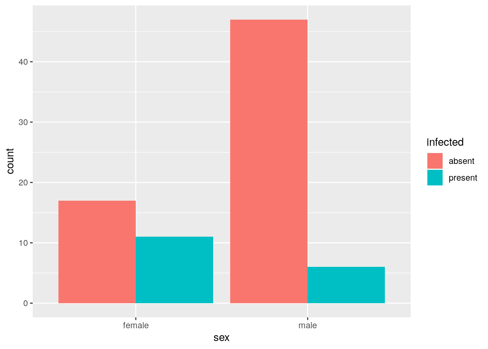
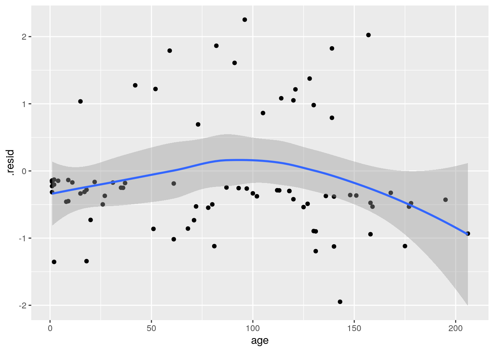
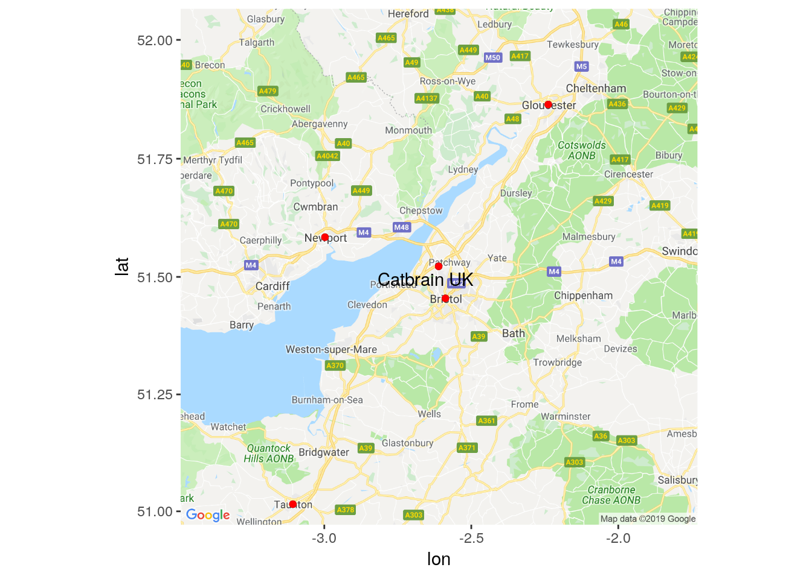
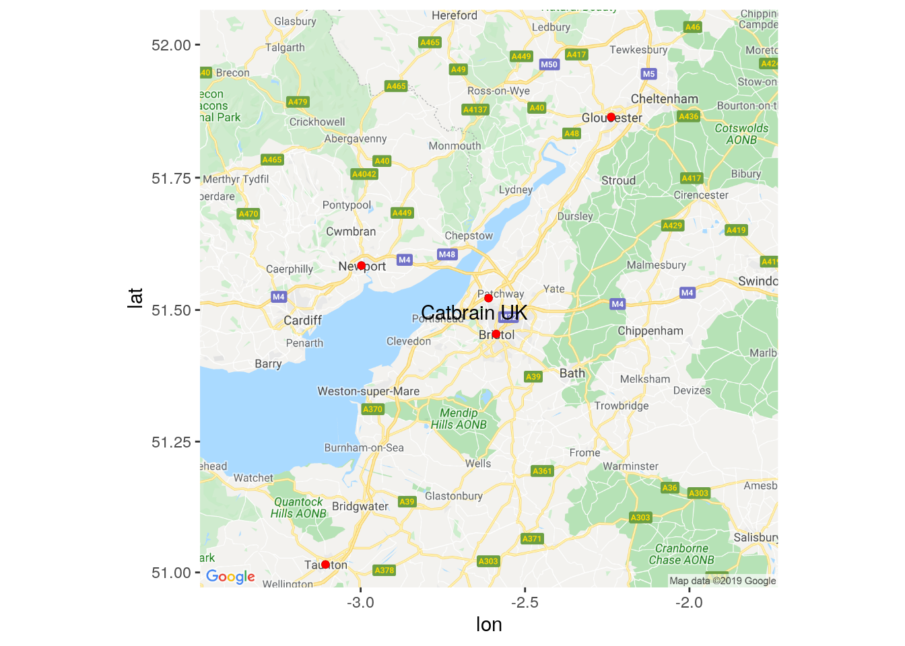
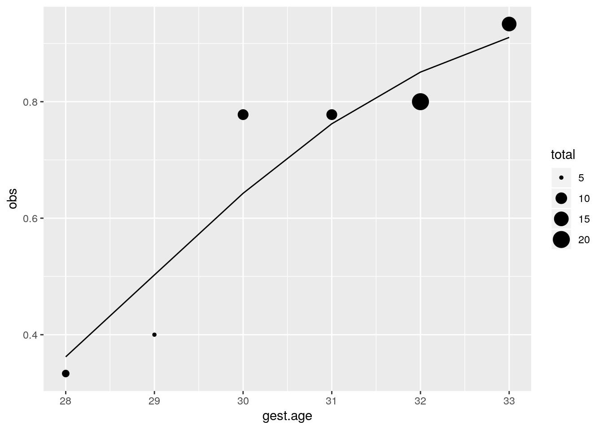
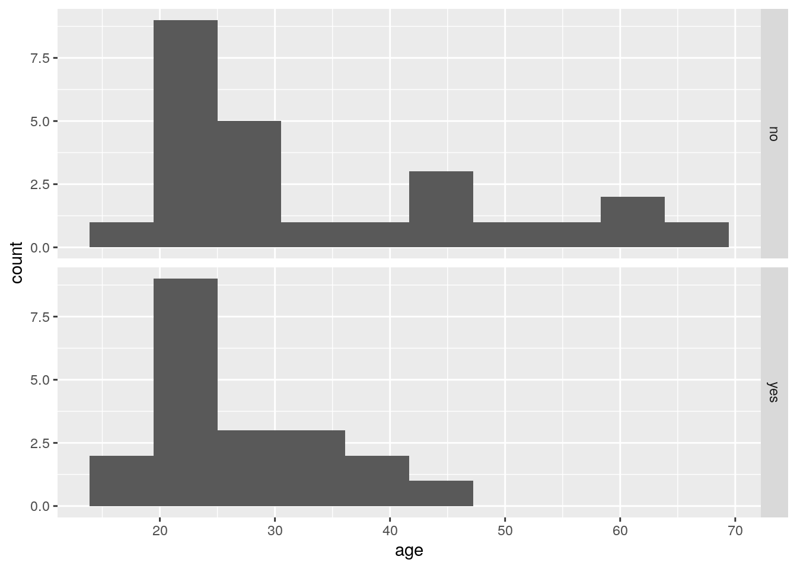
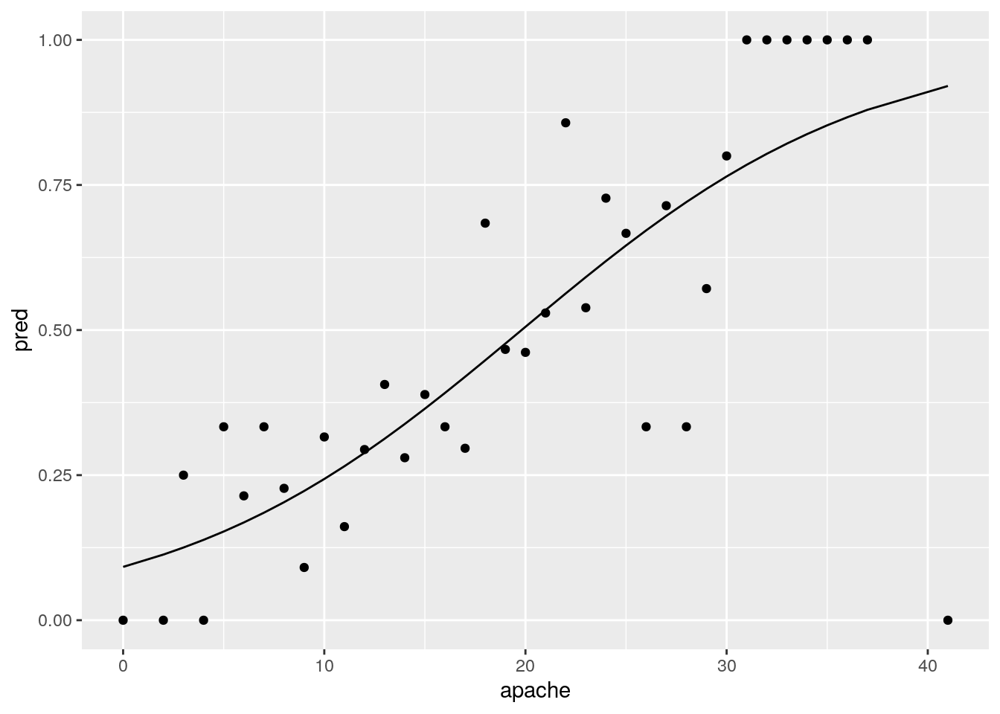
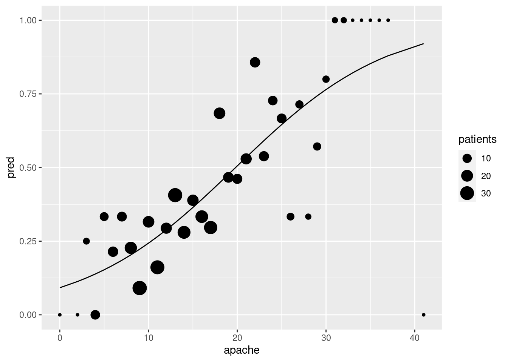

Chapter 18 Logistic regression
18.1 Finding wolf spiders on the beach
A team of Japanese researchers were investigating what would cause the burrowing wolf spider Lycosa ishikariana* to be found on a beach. They hypothesized that it had to do with the size of the grains of sand on the beach. They went to 28 beaches in Japan, measured the average sand grain size (in millimetres), and observed the presence or absence of this particular spider on each beach. The data are in link.
- Why would logistic regression be better than regular regression in this case?
Solution
Because the response variable, whether or not the spider is present, is a categorical yes/no success/failure kind of variable rather than a quantitative numerical one, and when you have this kind of response variable, this is when you want to use logistic regression.
- Read in the data and check that you have something sensible. (Look at the data file first: the columns are aligned but the headers are not aligned with them.)
Solution
The nature of the file means that you need read_table2:
## Parsed with column specification:
## cols(
## Grain.size = col_double(),
## Spiders = col_character()
## )## # A tibble: 28 x 2
## Grain.size Spiders
## <dbl> <chr>
## 1 0.245 absent
## 2 0.247 absent
## 3 0.285 present
## 4 0.299 present
## 5 0.327 present
## 6 0.347 present
## 7 0.356 absent
## 8 0.36 present
## 9 0.363 absent
## 10 0.364 present
## # … with 18 more rowsWe have a numerical sand grain size and a categorical variable
Spiders that indicates whether the spider was present or
absent. As we were expecting. (The categorical variable is actually
text or chr, which will matter in a minute.)
- Make a boxplot of sand grain size according to whether the spider is present or absent. Does this suggest that sand grain size has something to do with presence or absence of the spider?
Solution

The story seems to be that when spiders are present, the sand grain size tends to be larger. So we would expect to find some kind of useful relationship in the logistic regression.
Note that we have reversed the cause and effect here: in the boxplot we are asking “given that the spider is present or absent, how big are the grains of sand?”, whereas the logistic regression is asking “given the size of the grains of sand, how likely is the spider to be present?”. But if one variable has to do with the other, we would hope to see the link either way around.
- Fit a logistic regression predicting the presence or
absence of spiders from the grain size, and obtain its
summary. Note that you will need to do something with the response variable first.
Solution
The presence or absence of spiders is our response. This is actually text at the moment:
## # A tibble: 28 x 2
## Grain.size Spiders
## <dbl> <chr>
## 1 0.245 absent
## 2 0.247 absent
## 3 0.285 present
## 4 0.299 present
## 5 0.327 present
## 6 0.347 present
## 7 0.356 absent
## 8 0.36 present
## 9 0.363 absent
## 10 0.364 present
## # … with 18 more rowsso we need to make a factor version of it first. I’m going to live on the edge and overwrite everything:
## # A tibble: 28 x 2
## Grain.size Spiders
## <dbl> <fct>
## 1 0.245 absent
## 2 0.247 absent
## 3 0.285 present
## 4 0.299 present
## 5 0.327 present
## 6 0.347 present
## 7 0.356 absent
## 8 0.36 present
## 9 0.363 absent
## 10 0.364 present
## # … with 18 more rowsSpiders is now a factor, correctly. (Sometimes a text
variable gets treated as a factor, sometimes it needs to be an
explicit factor. This is one of those times.)
Now we go ahead and fit the model. I’m naming this as
response-with-a-number, so I still have the Capital Letter. Any choice
of name is good, though.
##
## Call:
## glm(formula = Spiders ~ Grain.size, family = "binomial", data = spider)
##
## Deviance Residuals:
## Min 1Q Median 3Q Max
## -1.7406 -1.0781 0.4837 0.9809 1.2582
##
## Coefficients:
## Estimate Std. Error z value Pr(>|z|)
## (Intercept) -1.648 1.354 -1.217 0.2237
## Grain.size 5.122 3.006 1.704 0.0884 .
## ---
## Signif. codes: 0 '***' 0.001 '**' 0.01 '*' 0.05 '.' 0.1 ' ' 1
##
## (Dispersion parameter for binomial family taken to be 1)
##
## Null deviance: 35.165 on 27 degrees of freedom
## Residual deviance: 30.632 on 26 degrees of freedom
## AIC: 34.632
##
## Number of Fisher Scoring iterations: 5- Is there a significant relationship between grain size and presence or absence of spiders at the \(\alpha=0.10\) level? Explain briefly.
Solution
The P-value on the Grain.size line is just less
than 0.10 (it is 0.088), so there is just a significant
relationship.
It isn’t a very strong significance, though. This
might be because we don’t have that much data: even though we have
28 observations, which, on the face of it, is not a very small
sample size, each observation doesn’t tell us much: only whether
the spider was found on that beach or not. Typical sample sizes in
logistic regression are in the hundreds — the same as for
opinion polls, because you’re dealing with the same kind of data.
The weak significance here lends some kind of weak support to the
researchers’ hypothesis, but I’m sure they were hoping for
something better.
- We want to obtain predicted probabilities of spider presence
for grain sizes of 0.2, 0.5, 0.8 and 1.1 millimetres. Do this by
creating a new data frame with one column called
Grain.size(watch the capital letter!) and those four values, and then feed this intopredict. I only want predicted probabilities, not any kind of intervals.
Solution
Something like this. I like to save all the values first, and then make a data frame of them, but you can do it in one go if you prefer:
## # A tibble: 4 x 1
## Grain.size
## <dbl>
## 1 0.2
## 2 0.5
## 3 0.8
## 4 1.1Another way to make the data frame of values to predict from is directly, using tribble:
## # A tibble: 4 x 1
## Grain.size
## <dbl>
## 1 0.2
## 2 0.5
## 3 0.8
## 4 1.1I have no particular preference here (use whichever makes most sense
to you), but when we come later to combinations of things using
crossing, I think the vector way is easier (make vectors of
each of the things you want combinations of, then combine them
into a data frame).
Now for the actual predictions. Get the predicted probabilities first, using response to get probabilities rather than something else, then put them next to the values being predicted for (using cbind because my pred.prob below is a matrix rather than a data frame:
## Grain.size pred.prob
## 1 0.2 0.3490280
## 2 0.5 0.7136446
## 3 0.8 0.9205335
## 4 1.1 0.9817663(Second attempt: on my first, the tibble contained
Grain.Sizes!)
This exemplifies my preferred technique in these things: I store the values to predict for in a vector with a plural name. The column names in the data frame I make have to have the same (singular) name as the original data, so the layout in making the data frame is “singular equals plural”. You’ll see a lot of this as we go through the course.
I think the data frame of values to predict for is called
spider.new because the original one is called
spider. I have to stop and think about my naming
conventions.
The above is all I need. (The stuff below is my extra comments.)
Note that the probabilities don’t go up linearly. (If they did, they
would soon get bigger than 1!). It’s actually the log-odds that
go up linearly. In fact, if you leave out the type on the
predict, log-odds is what you get:
## Grain.size pred.log.odds
## 1 0.2 -0.6233144
## 2 0.5 0.9131514
## 3 0.8 2.4496172
## 4 1.1 3.9860831The meaning of that slope coefficient in the summary, which
is about 5, is that if you increase grain size by 1, you increase the
log-odds by 5. In the table above, we increased the grain size by 0.3
each time, so we would expect to increase the log-odds by
\((0.3)(5)=1.5\), which is (to this accuracy) what happened.
Log-odds are hard to interpret. Odds are a bit easier, and to get
them, we have to exp the log-odds:
## Grain.size odds
## 1 0.2 0.5361644
## 2 0.5 2.4921640
## 3 0.8 11.5839120
## 4 1.1 53.8435749Thus, with each step of 0.3 in grain size, we multiply the odds of finding a spider by about
## [1] 4.481689or about 4.5 times. If you’re a gambler, this might give you a feel for how large the effect of grain size is. Or, of course, you can just look at the probabilities.
- Given your previous work in this question, does the trend you see in your predicted probabilities surprise you? Explain briefly.
Solution
My predicted probabilities go up as grain size goes up. This fails
to surprise me for a couple of reasons: first, in my boxplots, I
saw that grain size tended to be larger when spiders were present,
and second, in my logistic regression summary, the slope
was positive, so likewise spiders should be more likely as grain
size goes up. Observing just one of these things is enough, though
of course it’s nice if you can spot both.
18.2 Killing aphids
An experiment was designed to examine how well the insecticide rotenone kills aphids that feed on the chrysanthemum plant called Macrosiphoniella sanborni. The explanatory variable is the log concentration (in milligrams per litre) of the insecticide. At each of the five different concentrations, approximately 50 insects were exposed. The number of insects exposed at each concentration, and the number killed, are shown below.
Log-Concentration Insects exposed Number killed
0.96 50 6
1.33 48 16
1.63 46 24
2.04 49 42
2.32 50 44
- Get these data into R. You can do this by copying the data
into a file and reading that into R (creating a data frame), or you
can enter the data manually into R using
c, since there are not many values. In the latter case, you can create a data frame or not, as you wish. Demonstrate that you have the right data in R.
Solution
There are a couple of ways. My
current favourite is the tidyverse-approved
tribble method. A tribble is a
“transposed tibble”, in which you copy and paste the data,
inserting column headings and commas in the right places. The
columns don’t have to line up, since it’s the commas that
determine where one value ends and the next one begins:
dead_bugs <- tribble(
~log_conc, ~exposed, ~killed,
0.96, 50, 6,
1.33, 48, 16,
1.63, 46, 24,
2.04, 49, 42,
2.32, 50, 44
)
dead_bugs## # A tibble: 5 x 3
## log_conc exposed killed
## <dbl> <dbl> <dbl>
## 1 0.96 50 6
## 2 1.33 48 16
## 3 1.63 46 24
## 4 2.04 49 42
## 5 2.32 50 44Note that the last data value has no comma after it, but instead has
the closing bracket of tribble.
You can have extra spaces if you wish. They will just be ignored.
If you are clever in R
Studio, you can insert a column of commas all at once (using
“multiple cursors”).
I used to do it like this. I make vectors of each column using c and then glue the columns together into a data frame:
log_conc <- c(0.96, 1.33, 1.63, 2.04, 2.32)
exposed <- c(50, 48, 46, 49, 50)
killed <- c(6, 16, 24, 42, 44)
dead_bugs2 <- tibble(log_conc, exposed, killed)
dead_bugs2## # A tibble: 5 x 3
## log_conc exposed killed
## <dbl> <dbl> <dbl>
## 1 0.96 50 6
## 2 1.33 48 16
## 3 1.63 46 24
## 4 2.04 49 42
## 5 2.32 50 44The values are correct — I checked them.
Now you see why tribble stands for “transposed tibble”: if you want to construct a data frame by hand, you have to work with columns and then glue them together, but tribble allows you to work “row-wise” with the data as you would lay it out on the page.
The other obvious way to read the data values without typing them is to copy
them into a file and read that. The values as laid out are
aligned in columns. They might be separated by tabs, but they are
not. (It’s hard to tell without investigating, though a tab is by
default eight spaces and these values look farther apart than that.)
I copied them into a file exposed.txt in my current folder
(or use file.choose):
## Parsed with column specification:
## cols(
## `Log-Concentration` = col_double(),
## `Insects exposed` = col_double(),
## Number = col_double(),
## killed = col_logical()
## )## # A tibble: 5 x 4
## `Log-Concentration` `Insects exposed` Number killed
## <dbl> <dbl> <dbl> <lgl>
## 1 0.96 50 6 NA
## 2 1.33 48 16 NA
## 3 1.63 46 24 NA
## 4 2.04 49 42 NA
## 5 2.32 50 44 NAThis didn’t quite work: the last column Number killed got
split into two, with the actual number killed landing up in
Number and the column killed being empty. If you
look at the data file, the data values for Number killed are
actually aligned with the word Number, which is why it came
out this way. Also, you’ll note, the column names have those
“backticks” around them, because they contain illegal characters
like a minus sign and spaces. Perhaps a good way to
pre-empt
My daughter learned the word pre-empt because we like to play a bridge app on my phone; in the game of bridge, you make a pre-emptive bid when you have no great strength but a lot of cards of one suit, say seven, and it won’t be too bad if that suit is trumps, no matter what your partner has. If you have a weakish hand with a lot of cards in one suit, your opponents are probably going to be able to bid and make something, so you pre-emptively bid first to try and make it difficult for them. all these problems is to
make a copy of the data file with the illegal characters replaced by
underscores, which is my file exposed2.txt:
## Parsed with column specification:
## cols(
## Log_Concentration = col_double(),
## Insects_exposed = col_double(),
## Number_killed = col_double()
## )## # A tibble: 5 x 3
## Log_Concentration Insects_exposed Number_killed
## <dbl> <dbl> <dbl>
## 1 0.96 50 6
## 2 1.33 48 16
## 3 1.63 46 24
## 4 2.04 49 42
## 5 2.32 50 44This is definitely good. We’d have to be careful with Capital Letters this way, but it’s definitely good.
You may have thought that this was a lot of fuss to make about reading in data, but the point is that data can come your way in lots of different forms, and you need to be able to handle whatever you receive so that you can do some analysis with it.
- * Looking at the data, would you expect there to be a significant effect of log-concentration? Explain briefly.
Solution
The numbers of insects killed goes up sharply as the concentration increases, while the numbers of insects exposed don’t change much. So I would expect to see a strong, positive effect of concentration, and I would expect it to be strongly significant, especially since we have almost 250 insects altogether.
- We are going to do a logistic regression to predict how likely an insect is to be killed, as it depends on the log-concentration. Create a suitable response variable, bearing in mind (i) that we have lots of insects exposed to each different concentration, and (ii) what needs to go into each column of the response.
Solution
There needs to be a two-column response variable. The first column needs to be the number of “successes” (insects killed, here) and the second needs to be the number of “failures” (insects that survived). We don’t actually have the latter, but we know how many insects were exposed in total to each dose, so we can work it out. Like this:
dead_bugs %>%
mutate(survived = exposed - killed) %>%
select(killed, survived) %>%
as.matrix() -> response
response## killed survived
## [1,] 6 44
## [2,] 16 32
## [3,] 24 22
## [4,] 42 7
## [5,] 44 6glm requires an R matrix rather than a data
frame, so the last stage of our pipeline is to create one (using the
same numbers that are in the data frame: all the as.
functions do is to change what type of thing it is, without changing
its contents).
It’s also equally good to create the response outside of the
data frame and use cbind to glue its columns together:
## killed survived
## [1,] 6 44
## [2,] 16 32
## [3,] 24 22
## [4,] 42 7
## [5,] 44 6- Run a suitable logistic regression, and obtain a summary of the results.
Solution
I think you know how to do this by now:
##
## Call:
## glm(formula = response ~ log_conc, family = "binomial", data = dead_bugs)
##
## Deviance Residuals:
## 1 2 3 4 5
## -0.1963 0.2099 -0.2978 0.8726 -0.7222
##
## Coefficients:
## Estimate Std. Error z value Pr(>|z|)
## (Intercept) -4.8923 0.6426 -7.613 2.67e-14 ***
## log_conc 3.1088 0.3879 8.015 1.11e-15 ***
## ---
## Signif. codes: 0 '***' 0.001 '**' 0.01 '*' 0.05 '.' 0.1 ' ' 1
##
## (Dispersion parameter for binomial family taken to be 1)
##
## Null deviance: 96.6881 on 4 degrees of freedom
## Residual deviance: 1.4542 on 3 degrees of freedom
## AIC: 24.675
##
## Number of Fisher Scoring iterations: 4- Does your analysis support your answer to (here)? Explain briefly.
Solution
That’s a very small P-value, \(1.1\times 10^{-15}\), on
log_conc, so there is no doubt that concentration has an
effect on an insect’s chances of being killed. This is exactly what
I guessed in (here), which I did before looking at the
results, honest!
- Obtain predicted probabilities of an insect’s being killed at
each of the log-concentrations in the data set. (This is easier than
it sometimes is, because here you don’t create a new data frame for
predict.)
Solution
Just this (notice there are only two things going into
predict):
## prob
## 1 0.96 0.1292158
## 2 1.33 0.3191540
## 3 1.63 0.5436313
## 4 2.04 0.8099321
## 5 2.32 0.9105221or, if you frame everything in terms of the tidyverse, turn
the predictions from a matrix into a tibble first,
and then use bind_cols to glue them together:
## # A tibble: 5 x 4
## value log_conc exposed killed
## <dbl> <dbl> <dbl> <dbl>
## 1 0.129 0.96 50 6
## 2 0.319 1.33 48 16
## 3 0.544 1.63 46 24
## 4 0.810 2.04 49 42
## 5 0.911 2.32 50 44The advantage of showing the whole input data frame is that you can compare the observed with the predicted. For example, 44 out of 50 insects were killed at log-dose 2.32, which is a proportion of 0.88, pretty close to the prediction of 0.91.
- People in this kind of work are often interested in the “median lethal dose”. In this case, that would be the log-concentration of the insecticide that kills half the insects. Based on your predictions, roughly what do you think the median lethal dose is?
Solution
The log-concentration of 1.63 is predicted to kill just over half the insects, so the median lethal dose should be a bit less than 1.63. It should not be as small as 1.33, though, since that log-concentration only kills less than a third of the insects. So I would guess somewhere a bit bigger than 1.5. Any guess somewhere in this ballpark is fine: you really cannot be very accurate.
Extra: this is kind of a strange prediction problem, because we know what the response variable should be, and we want to know what the explanatory variable’s value is. Normally we do predictions the other way around. This kind of thing is sometimes called an inverse prediction. So the only way to get a more accurate figure is to try some different log-concentrations, and see which one gets closest to a probability 0.5 of killing the insect.
Something like this would work:
lc.new <- tibble(log_conc = seq(1.5, 1.63, 0.01))
prob <- predict(bugs.1, lc.new, type = "response")
cbind(lc.new, prob)## log_conc prob
## 1 1.50 0.4429568
## 2 1.51 0.4506406
## 3 1.52 0.4583480
## 4 1.53 0.4660754
## 5 1.54 0.4738191
## 6 1.55 0.4815754
## 7 1.56 0.4893406
## 8 1.57 0.4971110
## 9 1.58 0.5048827
## 10 1.59 0.5126521
## 11 1.60 0.5204154
## 12 1.61 0.5281689
## 13 1.62 0.5359087
## 14 1.63 0.5436313The closest one of these to a probability of 0.5 is 0.4971, which goes
with a log-concentration of 1.57: indeed, a bit bigger than 1.5 and a
bit less than 1.63. The seq in the construction of the new
data frame is “fill sequence”: go from 1.5 to 1.63 in steps of
0.01. The rest of it is the same as before.
Now, of course this is only our “best guess”, like a single-number prediction in regression. There is uncertainty attached to it (because the actual logistic regression might be different from the one we estimated), so we ought to provide a confidence interval for it. But I’m riding the bus as I type this, so I can’t look it up right now.
Later: there’s a function called dose.p
in MASS that appears to do this:
## Dose SE
## p = 0.5: 1.573717 0.05159576We have a sensible point estimate (the same 1.57 that we got by hand), and we have a standard error, so we can make a confidence interval by going up and down twice it (or 1.96 times it) from the estimate. The structure of the result is a bit arcane, though:
## 'glm.dose' Named num 1.57
## - attr(*, "names")= chr "p = 0.5:"
## - attr(*, "SE")= num [1, 1] 0.0516
## ..- attr(*, "dimnames")=List of 2
## .. ..$ : chr "p = 0.5:"
## .. ..$ : NULL
## - attr(*, "p")= num 0.5It is what R calls a “vector with attributes”. To get at the pieces and calculate the interval, we have to do something like this:
## [1] 1.573717## [1] 0.05159576and then make the interval:
## [1] 1.470526 1.6769091.47 to 1.68.
I got this idea from page 4.14 of link. I think I got a little further than he did. An idea that works more generally is to get several intervals all at once, say for the “quartile lethal doses” as well:
## Dose SE
## p = 0.25: 1.220327 0.07032465
## p = 0.50: 1.573717 0.05159576
## p = 0.75: 1.927108 0.06532356This looks like a data frame or matrix, but is actually a
“named vector”, so enframe will get at least some of this and turn
it into a genuine data frame:
## # A tibble: 3 x 2
## name value
## <chr> <glm.dose>
## 1 p = 0.25: 1.220327
## 2 p = 0.50: 1.573717
## 3 p = 0.75: 1.927108That doesn’t get the SEs, so we’ll make a new column by grabbing the “attribute” as above:
## # A tibble: 3 x 3
## name value SE[,1]
## <chr> <glm.dose> <dbl>
## 1 p = 0.25: 1.220327 0.0703
## 2 p = 0.50: 1.573717 0.0516
## 3 p = 0.75: 1.927108 0.0653and now we make the intervals by making new columns containing the lower and upper limits:
enframe(lethal) %>%
mutate(SE = attr(lethal, "SE")) %>%
mutate(LCL = value - 2 * SE, UCL = value + 2 * SE)## # A tibble: 3 x 5
## name value SE[,1] LCL[,1] UCL[,1]
## <chr> <glm.dose> <dbl> <dbl> <dbl>
## 1 p = 0.25: 1.220327 0.0703 1.08 1.36
## 2 p = 0.50: 1.573717 0.0516 1.47 1.68
## 3 p = 0.75: 1.927108 0.0653 1.80 2.06Now we have intervals for the median lethal dose, as well as for the doses that kill a quarter and three quarters of the aphids.
To end this question, we loaded MASS, so we should unload it before we run into
problems with
select later:
## Warning: 'MASS' namespace cannot be unloaded:
## namespace 'MASS' is imported by 'lme4' so cannot be unloaded18.3 The effects of Substance A
In a dose-response experiment, animals (or cell cultures or human subjects) are exposed to some toxic substance, and we observe how many of them show some sort of response. In this experiment, a mysterious Substance A is exposed at various doses to 100 cells at each dose, and the number of cells at each dose that suffer damage is recorded. The doses were 10, 20, … 70 (mg), and the number of damaged cells out of 100 were respectively 10, 28, 53, 77, 91, 98, 99.
- Find a way to get these data into R, and show that you have managed to do so successfully.
Solution
There’s not much data here, so we don’t need to create a file,
although you can do so if you like (in the obvious way: type the
doses and damaged cell numbers into a .txt file or
spreadsheet and read in with the appropriate read_
function).
Or, use a tribble:
## # A tibble: 7 x 2
## dose damaged
## <dbl> <dbl>
## 1 10 10
## 2 20 28
## 3 30 53
## 4 40 77
## 5 50 91
## 6 60 98
## 7 70 99Or, make a data frame with the values typed in:
## # A tibble: 7 x 2
## dose damaged
## <dbl> <dbl>
## 1 10 10
## 2 20 28
## 3 30 53
## 4 40 77
## 5 50 91
## 6 60 98
## 7 70 99seq fills a sequence “10 to 70 in steps of 10”, or you can
just list the doses.
I like this better than making two columns not attached to a data frame, but that will work as well.
For these, find a way you like, and stick with it.
- Would you expect to see a significant effect of dose for these data? Explain briefly.
Solution
The number of damaged cells goes up sharply as the dose goes up (from a very small number to almost all of them). So I’d expect to see a strongly significant effect of dose. This is far from something that would happen by chance.
- Fit a logistic regression modelling the probability of a cell being damaged as it depends on dose. Display the results. (Comment on them is coming later.)
Solution
This has a bunch of observations at each dose (100 cells, in
fact), so we need to do the two-column response thing: the
successes in the first column and the failures in the
second. This means that we first need to calculate the number of
cells at each dose that were not damaged, by subtracting the
number that were damaged from 100. R makes this easier
than you’d think, as
you see. A mutate is the way to
go: create a new column in dr and save back in
dr (because I like living on the edge):
## # A tibble: 7 x 3
## dose damaged undamaged
## <dbl> <dbl> <dbl>
## 1 10 10 90
## 2 20 28 72
## 3 30 53 47
## 4 40 77 23
## 5 50 91 9
## 6 60 98 2
## 7 70 99 1The programmer in you is probably complaining “but, 100 is a number and damaged is a vector of 7 numbers. How does R know to subtract each one from 100?” Well, R has what’s known as
“recycling rules”: if you try to add or subtract (or elementwise
multiply or divide) two vectors of different lengths, it recycles the
smaller one by repeating it until it’s as long as the longer one. So
rather than 100-damaged giving an error, it does what you
want.
The usual application of this is to combine a number with a vector. If you try to subtract a length-2 vector from a length-6 vector, R will repeat the shorter one three times and do the subtraction, but if you try to subtract a length-2 vector from a length-7 vector, where you’d have to repeat the shorter one a fractional number of times, R will do it, but you’ll get a warning, because this is probably not what you wanted. Try it and see.
I took the risk of saving the new data frame over the old one. If it had failed for some reason, I could have started again.
Now we have to make our response “matrix” with two columns, using cbind:
## damaged undamaged
## [1,] 10 90
## [2,] 28 72
## [3,] 53 47
## [4,] 77 23
## [5,] 91 9
## [6,] 98 2
## [7,] 99 1Note that each row adds up to 100, since there were 100 cells at each
dose. This is actually trickier than it looks: the two things in
cbind are columns (vectors), and cbind glues them
together to make an R matrix:
## [1] "matrix" "array"which is what glm needs here, even though it looks a lot like
a data frame (which wouldn’t work here). This would be a data
frame:
## [1] "tbl_df" "tbl" "data.frame"and would therefore be the wrong thing to give glm. So I had
to do it with cbind, or use some other trickery, like this:
## [1] "matrix" "array"Now we fit our model:
##
## Call:
## glm(formula = response ~ dose, family = "binomial", data = dr)
##
## Deviance Residuals:
## 1 2 3 4 5 6 7
## -0.16650 0.28794 -0.02092 -0.20637 -0.21853 0.54693 -0.06122
##
## Coefficients:
## Estimate Std. Error z value Pr(>|z|)
## (Intercept) -3.275364 0.278479 -11.76 <2e-16 ***
## dose 0.113323 0.008315 13.63 <2e-16 ***
## ---
## Signif. codes: 0 '***' 0.001 '**' 0.01 '*' 0.05 '.' 0.1 ' ' 1
##
## (Dispersion parameter for binomial family taken to be 1)
##
## Null deviance: 384.13349 on 6 degrees of freedom
## Residual deviance: 0.50428 on 5 degrees of freedom
## AIC: 31.725
##
## Number of Fisher Scoring iterations: 4- Does your output indicate that the probability of damage really does increase with dose? (There are two things here: is there really an effect, and which way does it go?)
Solution
The slope of dose is significantly nonzero (P-value
less than \(2.2 \times 10^{-16}\), which is as small as it can
be). The slope itself is positive, which means that as
dose goes up, the probability of damage goes up.
That’s all I needed, but if you want to press on: the slope is
0.113, so an increase of 1 in dose goes with an increase of
0.113 in the log-odds of damage. Or it multiplies the
odds of damage by \(\exp(0.113)\). Since 0.113 is small, this is
about \(1.113\) (mathematically, \(e^x\simeq 1+x\) if \(x\) is small),
so that the increase is about 11%.
If you like, you can get a rough CI for the slope by going up
and down twice its standard error (this is the usual
approximately-normal thing). Here that would be
## [1] 0.096693 0.129953I thought about doing that in my head, but thought better of it, since I have R just sitting here. The interval is short (we have lots of data) and definitely does not contain zero.
- Obtain predicted damage probabilities for the doses that were actually used in the experiment. (This is easier than some of our other predictions: if you are using the original data, you only need to feed in the fitted model object and not a data frame of new data.) Display your predicted probabilities next to the doses and the observed numbers of damaged cells.
Solution
The remaining care that this needs is to make sure that we do
indeed get predicted probabilities, and then some
cbinding to get the right kind of display:
## dose damaged p
## 1 10 10 0.1050689
## 2 20 28 0.2671957
## 3 30 53 0.5310440
## 4 40 77 0.7786074
## 5 50 91 0.9161232
## 6 60 98 0.9713640
## 7 70 99 0.9905969If you forget the type="response" you’ll get predicted
log-odds, which are not nearly so easy to interpret.
- Looking at the predicted probabilities, would you say that the model fits well? Explain briefly.
Solution
There were 100 cells tested at each dose, so that the predicted probabilities should be close to the observed numbers divided by 100. They are in fact very close to this, so the model fits very well. Your actual words are a judgement call, so precisely what you say doesn’t matter so much, but I think this model fit is actually closer than you could even hope to expect, it’s that good. But, your call. I think your answer ought to contain “close” or “fits well” at the very least.
18.4 What makes an animal get infected?
Some animals got infected with a parasite. We are interested in whether the likelihood of infection depends on any of the age, weight and sex of the animals. The data are at link. The values are separated by tabs.
- Read in the data and take a look at the first few lines. Is this one animal per line, or are several animals with the same age, weight and sex (and infection status) combined onto one line? How can you tell?
Solution
The usual beginnings, bearing in mind the data layout:
## Parsed with column specification:
## cols(
## infected = col_character(),
## age = col_double(),
## weight = col_double(),
## sex = col_character()
## )## # A tibble: 81 x 4
## infected age weight sex
## <chr> <dbl> <dbl> <chr>
## 1 absent 2 1 female
## 2 absent 9 13 female
## 3 present 15 2 female
## 4 absent 15 16 female
## 5 absent 18 2 female
## 6 absent 20 9 female
## 7 absent 26 13 female
## 8 present 42 6 female
## 9 absent 51 9 female
## 10 present 52 6 female
## # … with 71 more rowsSuccess. This appears to be one animal per line, since there is no indication of frequency (of “how many”). If you were working as a consultant with somebody’s data, this would be a good thing to confirm with them before you went any further.
You can check a few more lines to convince yourself:
## # A tibble: 81 x 4
## infected age weight sex
## <chr> <dbl> <dbl> <chr>
## 1 absent 2 1 female
## 2 absent 9 13 female
## 3 present 15 2 female
## 4 absent 15 16 female
## 5 absent 18 2 female
## 6 absent 20 9 female
## 7 absent 26 13 female
## 8 present 42 6 female
## 9 absent 51 9 female
## 10 present 52 6 female
## 11 present 59 12 female
## 12 absent 68 10 female
## 13 absent 72 15 female
## 14 present 73 1 female
## 15 absent 78 15 female
## 16 absent 80 16 female
## 17 present 82 14 female
## 18 present 91 12 female
## 19 present 105 5 female
## 20 present 114 8 female
## # … with 61 more rowsand the story is much the same. The other hint is that you have actual categories of response, which usually indicates one individual per row, but not always. If it doesn’t, you have some extra work to do to bash it into the right format.
Extra: let’s see whether we can come up with an example of that. I’ll make a
smaller example, and perhaps the place to start is
“all possible combinations” of a few things.
If you haven’t seen crossing
before, skip ahead to part (here):
## # A tibble: 8 x 3
## age gender infected
## <dbl> <chr> <chr>
## 1 10 f n
## 2 10 f y
## 3 10 m n
## 4 10 m y
## 5 12 f n
## 6 12 f y
## 7 12 m n
## 8 12 m yThese might be one individual per row, or they might be more than one, as they would be if we have a column of frequencies:
## # A tibble: 8 x 4
## age gender infected freq
## <dbl> <chr> <chr> <dbl>
## 1 10 f n 12
## 2 10 f y 19
## 3 10 m n 17
## 4 10 m y 11
## 5 12 f n 18
## 6 12 f y 26
## 7 12 m n 16
## 8 12 m y 8Now, these are multiple observations per row (the presence of
frequencies means there’s no doubt about that), but the format is
wrong: infected is my response variable, and we want the
frequencies of infected being y or n in
separate columns — that is, we have to untidy the data
a bit to make it suitable for modelling. This is pivot_wider, the
opposite of pivot_longer:
## # A tibble: 4 x 4
## age gender n y
## <dbl> <chr> <dbl> <dbl>
## 1 10 f 12 19
## 2 10 m 17 11
## 3 12 f 18 26
## 4 12 m 16 8Now you can pull out the columns y and n and make
them into your response, and predict that from age and
gender.
The moral of this story is that if you are going to have multiple observations per row, you probably want the combinations of explanatory variables one per row, but you want the categories of the response variable in separate columns.
Back to where we were the rest of the way.
- * Make suitable plots or summaries of
infectedagainst each of the other variables. (You’ll have to think aboutsex, um, you’ll have to think about thesexvariable, because it too is categorical.) Anything sensible is OK here. You might like to think back to what we did in Question here for inspiration. (You can also investigatetable, which does cross-tabulations.)
Solution
What comes to my mind for the numerical variables age and
weight is boxplots:
The variables sex and infected are both
categorical. I guess a good plot for those would be some kind of
grouped bar plot, which I have to think about.
So let’s first try a numerical summary, a
cross-tabulation, which is gotten via table:
## infected
## sex absent present
## female 17 11
## male 47 6Or, if you like the tidyverse:
## # A tibble: 4 x 3
## sex infected n
## <chr> <chr> <int>
## 1 female absent 17
## 2 female present 11
## 3 male absent 47
## 4 male present 6Now, bar plots. Let’s start with one variable. The basic bar plot has
categories of a categorical variable along the \(x\)-axis and each bar
is a count of how many observations were in that category. What is
nice about geom_bar is that it will do the counting for you,
so that the plot is just this:

There are about twice as many males as females.
You may think that this looks like a histogram, which it almost does,
but there is an important difference: the kind of variable on the
\(x\)-axis. Here, it is a categorical variable, and you count how many
observations fall in each category (at least, ggplot
does). On a histogram, the \(x\)-axis variable is a continuous
numerical one, like height or weight, and you have to
chop it up into intervals (and then you count how many
observations are in each chopped-up interval).
Technically, on a bar plot, the bars have a little gap between them (as here), whereas the histogram bars are right next to each other, because the right side of one histogram bar is the left side of the next.
All right, two categorical variables. The idea is that you have each
bar divided into sub-bars based on the frequencies of a second
variable, which is specified by fill. Here’s the basic idea:

This is known in the business as a “stacked bar chart”. The issue is how much of each bar is blue, which is unnecessarily hard to judge because the male bar is taller. (Here, it is not so bad, because the amount of blue in the male bar is smaller and the bar is also taller. But we got lucky here.)
There are two ways to improve this. One is known as a “grouped bar chart”, which goes like this:

The absent and present frequencies for females are next to each other, and the same for males, and you can read off how big they are from the \(y\)-scale. This is my preferred graph for two (or more than two) categorical variables.
You could switch the roles of sex and infected and
get a different chart, but one that conveys the same information. Try
it. (The reason for doing it the way around I did is that being
infected or not is the response and sex is explanatory, so
that on my plot you can ask “out of the males, how many were infected?”,
which is the way around that makes sense.)
The second way is to go back to stacked bars, but make them the same
height, so you can compare the fractions of the bars that are each
colour. This is position="fill":

This also shows that more of the females were infected than the males, but without getting sidetracked into the issue that there were more males to begin with.
I wrote this question in early 2017. At that time, I wrote (quote):
I learned about this one approximately two hours ago. I just ordered
Hadley Wickham’s new book “R for Data Science” from Amazon, and it
arrived today. It’s in there. (A good read, by the way. I’m thinking
of using it as a recommended text next year.)
As is so often the way with ggplot, the final answer looks
very simple, but there is a lot of thinking required to get there, and
you end up having even more respect for Hadley Wickham for the clarity
of thinking that enabled this to be specified in a simple way.
(end quote)
- Which, if any, of your explanatory variables appear to be
related to
infected? Explain briefly.
Solution
Let’s go through our output from (here). In terms of
age, when infection is present, animals are (slightly)
older. So there might be a small age effect. Next, when infection
is present, weight is typically a lot less. So there ought
to be a big weight effect.
Finally, from the table, females are
somewhere around 50-50 infected or not, but very few males are
infected. So there ought to be a big sex effect as well.
This also appears in the grouped bar plot, where the red
(“absent”) bar for males is much taller than the blue
(“present”) bar, but for females the two bars are almost the
same height.
So the story is that we would expect a significant effect of
sex and weight, and maybe of age as well.
- Fit a logistic regression predicting
infectedfrom the other three variables. Display thesummary.
Solution
Thus:
## Error in eval(family$initialize): y values must be 0 <= y <= 1Oh, I forgot to turn infected into a factor. This is the
shortcut way to do that:
infect.1 <- glm(factor(infected) ~ age + weight + sex, family = "binomial", data = infect)
summary(infect.1)##
## Call:
## glm(formula = factor(infected) ~ age + weight + sex, family = "binomial",
## data = infect)
##
## Deviance Residuals:
## Min 1Q Median 3Q Max
## -1.9481 -0.5284 -0.3120 -0.1437 2.2525
##
## Coefficients:
## Estimate Std. Error z value Pr(>|z|)
## (Intercept) 0.609369 0.803288 0.759 0.448096
## age 0.012653 0.006772 1.868 0.061701 .
## weight -0.227912 0.068599 -3.322 0.000893 ***
## sexmale -1.543444 0.685681 -2.251 0.024388 *
## ---
## Signif. codes: 0 '***' 0.001 '**' 0.01 '*' 0.05 '.' 0.1 ' ' 1
##
## (Dispersion parameter for binomial family taken to be 1)
##
## Null deviance: 83.234 on 80 degrees of freedom
## Residual deviance: 59.859 on 77 degrees of freedom
## AIC: 67.859
##
## Number of Fisher Scoring iterations: 5The “proper” way to do it is to create a new column in the data
frame containing the factor version of infected. Pipeline
fans among you can do it this way:
infect %>%
mutate(infected = factor(infected)) %>%
glm(infected ~ age + weight + sex, family = "binomial", data = .) -> infect.1a
summary(infect.1a)##
## Call:
## glm(formula = infected ~ age + weight + sex, family = "binomial",
## data = .)
##
## Deviance Residuals:
## Min 1Q Median 3Q Max
## -1.9481 -0.5284 -0.3120 -0.1437 2.2525
##
## Coefficients:
## Estimate Std. Error z value Pr(>|z|)
## (Intercept) 0.609369 0.803288 0.759 0.448096
## age 0.012653 0.006772 1.868 0.061701 .
## weight -0.227912 0.068599 -3.322 0.000893 ***
## sexmale -1.543444 0.685681 -2.251 0.024388 *
## ---
## Signif. codes: 0 '***' 0.001 '**' 0.01 '*' 0.05 '.' 0.1 ' ' 1
##
## (Dispersion parameter for binomial family taken to be 1)
##
## Null deviance: 83.234 on 80 degrees of freedom
## Residual deviance: 59.859 on 77 degrees of freedom
## AIC: 67.859
##
## Number of Fisher Scoring iterations: 5Either way is good, and gives the same answer. The second way uses the
data=. trick to ensure that the input data frame to
glm is the output from the previous step, the one with the
factor version of infected in it. The data=. is
needed because glm requires a model formula first rather than
a data frame (if the data were first, you could just omit it).
- * Which variables, if any, would you consider removing from the model? Explain briefly.
Solution
This is the same idea as in multiple regression: look at the end
of the line for each variable to get its individual P-value, and
if that’s not small, you can take that variable out. age
has a P-value of 0.062, which is (just) larger than 0.05, so we
can consider removing this variable. The other two P-values,
0.00089 and 0.024, are definitely less than 0.05, so those
variables should stay.
Alternatively, you can say that the P-value for age is
small enough to be interesting, and therefore that age
should stay. That’s fine, but then you need to be consistent in
the next part.
You probably noted that sex is categorical. However, it
has only the obvious two levels, and such a categorical variable
can be assessed for significance this way. If you were worried
about this, the right way to go is drop1:
## Single term deletions
##
## Model:
## factor(infected) ~ age + weight + sex
## Df Deviance AIC LRT Pr(>Chi)
## <none> 59.859 67.859
## age 1 63.785 69.785 3.9268 0.0475236 *
## weight 1 72.796 78.796 12.9373 0.0003221 ***
## sex 1 65.299 71.299 5.4405 0.0196754 *
## ---
## Signif. codes: 0 '***' 0.001 '**' 0.01 '*' 0.05 '.' 0.1 ' ' 1The P-values are similar, but not identical. The test is this way because it’s a generalized linear model rather than a regular regression.
I have to stop and think about this. There is a lot of theory that says there are several ways to do stuff in regression, but they are all identical. The theory doesn’t quite apply the same in generalized linear models (of which logistic regression is one): if you had an infinite sample size, the ways would all be identical, but in practice you’ll have a very finite amount of data, so they won’t agree.
I’m thinking about my aims here: I want to decide whether each
\(x\)-variable should stay in the model, and for that I want a test that
expresses whether the model fits significantly worse if I take it
out. The result I get ought to be the same as physically removing it
and comparing the models with anova,
eg. for age:
## Analysis of Deviance Table
##
## Model 1: factor(infected) ~ weight + sex
## Model 2: factor(infected) ~ age + weight + sex
## Resid. Df Resid. Dev Df Deviance Pr(>Chi)
## 1 78 63.785
## 2 77 59.859 1 3.9268 0.04752 *
## ---
## Signif. codes: 0 '***' 0.001 '**' 0.01 '*' 0.05 '.' 0.1 ' ' 1This is the same thing as drop1 gives.
So, I think: use drop1 to assess whether anything should come
out of a model like this, and use summary to obtain the
slopes to interpret (in this kind of model, whether they’re positive
or negative, and thus what kind of effect each explanatory variable
has on the probability of whatever-it-is.)
Solution
I think they are extremely consistent. When we looked at the
plots, we said that weight and sex had large
effects, and they came out definitely significant. There was a
small difference in age between the infected and non-infected
groups, and age came out borderline significant (with a
P-value definitely larger than for the other variables, so that
the evidence of its usefulness was weaker).
- *
The first and third quartiles of
ageare 26 and 130; the first and third quartiles ofweightare 9 and 16. Obtain predicted probabilities for all combinations of these andsex. (You’ll need to start by making a new data frame, usingcrossingto get all the combinations.)
Solution
Here’s how crossing
goes. I’ll do it in steps. Note my use of plural names to denote
the things I want all combinations of:
ages <- c(26, 130)
weights <- c(9, 16)
sexes <- c("female", "male")
infect.new <- crossing(age = ages, weight = weights, sex = sexes)
infect.new## # A tibble: 8 x 3
## age weight sex
## <dbl> <dbl> <chr>
## 1 26 9 female
## 2 26 9 male
## 3 26 16 female
## 4 26 16 male
## 5 130 9 female
## 6 130 9 male
## 7 130 16 female
## 8 130 16 maleI could have asked you to include some more values of age and
weight, for example the median as well, to get a clearer
picture. But that would have made infect.new bigger, so I
stopped here.
crossing makes a data frame from input vectors, so it
doesn’t matter if those are different lengths. In fact, it’s also
possible to make this data frame from things like quartiles stored in
a data frame. To do that (as we did in the hospital satisfaction
question), you wrap the whole crossing in a with.
Next, the predictions:
## age weight sex pred
## 1 26 9 female 0.24733693
## 2 26 9 male 0.06560117
## 3 26 16 female 0.06248811
## 4 26 16 male 0.01404012
## 5 130 9 female 0.55058652
## 6 130 9 male 0.20744380
## 7 130 16 female 0.19903348
## 8 130 16 male 0.05041244I didn’t ask you to comment on these, since the question is long enough already. But that’s not going to stop me!
These are predicted probabilities of infection. When you have one observation per line, the predictions are of the second of the two levels of the response variable. When you make that two-column response, the predictions are of the probability of being in the first column. That’s what it is. As the young people say, don’t @ me.
The way I remember the one-column-response thing is that the first
level is the baseline (as it is in a regression with a categorical
explanatory variable), and the second level is the one whose
probability is modelled (in the same way that the second, third etc.
levels of a categorical explanatory variable are the ones that appear
in the summary table).
Let’s start with sex. The probabilities of a female being
infected are all much higher than of a corresponding male (with the
same age and weight) being infected. Compare, for example, lines 1 and
2. Or 3 and 4. Etc. So sex has a big effect.
What about weight? As weight goes from 9 to 16, with
everything else the same, the predicted probability of infection goes
sharply down. This is what we saw before: precisely, the
boxplot showed us that infected animals were likely to be less heavy.
Last, age. As age goes up, the probabilities go (somewhat) up
as well. Compare, for example, lines 1 and 5 or lines 4 and 8. I think
this is a less dramatic change than for the other variables, but
that’s a judgement call.
I got this example from (horrible URL warning) here: link It starts on page 275 in my edition. He goes at the analysis a different way, but he finishes with another issue that I want to show you.
Let’s work out the residuals and plot them against our quantitative
explanatory variables. I think the best way to do this is
augment from broom, to create a data frame
containing the residuals alongside the original data:
## # A tibble: 81 x 10
## infected age weight sex .fitted .resid .std.resid .hat .sigma .cooksd
## <chr> <dbl> <dbl> <chr> <dbl> <dbl> <dbl> <dbl> <dbl> <dbl>
## 1 absent 2 1 female 0.407 -1.35 -1.46 0.140 0.872 0.0710
## 2 absent 9 13 female -2.24 -0.450 -0.463 0.0544 0.886 0.00162
## 3 present 15 2 female 0.343 1.04 1.10 0.116 0.878 0.0263
## 4 absent 15 16 female -2.85 -0.336 -0.343 0.0416 0.887 0.000657
## 5 absent 18 2 female 0.381 -1.34 -1.43 0.112 0.872 0.0521
## 6 absent 20 9 female -1.19 -0.729 -0.755 0.0678 0.883 0.00594
## 7 absent 26 13 female -2.02 -0.498 -0.511 0.0515 0.886 0.00189
## 8 present 42 6 female -0.227 1.28 1.32 0.0664 0.874 0.0239
## 9 absent 51 9 female -0.797 -0.863 -0.886 0.0515 0.882 0.00645
## 10 present 52 6 female -0.100 1.22 1.26 0.0609 0.876 0.0191
## # … with 71 more rows## `geom_smooth()` using method = 'loess' and formula 'y ~ x'
infect.1a is, I think, a genuine data.frame rather
than a tibble.
I don’t quite know what to make of that plot. It doesn’t look quite random, and yet there are just some groups of points rather than any real kind of trend.
The corresponding plot with age goes the same way:
## `geom_smooth()` using method = 'loess' and formula 'y ~ x'
Crawley found the slightest suggestion of an up-and-down curve in
there. I’m not sure I agree, but that’s what he saw. As with a
regular regression, the residuals against anything should look random,
with no trends. (Though the residuals from a logistic regression can
be kind of odd, because the response variable can only be 1 or 0.)
Crawley tries adding squared terms to the logistic regression, which
goes like this. The glm statement is long, as they usually
are, so it’s much easier to use update:
As we saw before, when thinking about what to keep, we want to look at drop1:
## Single term deletions
##
## Model:
## factor(infected) ~ age + weight + sex + I(age^2) + I(weight^2)
## Df Deviance AIC LRT Pr(>Chi)
## <none> 48.620 60.620
## age 1 57.631 67.631 9.0102 0.002685 **
## weight 1 50.443 60.443 1.8222 0.177054
## sex 1 51.298 61.298 2.6771 0.101800
## I(age^2) 1 55.274 65.274 6.6534 0.009896 **
## I(weight^2) 1 53.091 63.091 4.4710 0.034474 *
## ---
## Signif. codes: 0 '***' 0.001 '**' 0.01 '*' 0.05 '.' 0.1 ' ' 1The squared terms are both significant. The linear terms,
age and weight, have to stay, regardless of their
significance.
When you have higher-order terms, you have to keep the lower-order ones as well: higher powers, or interactions (as we see in ANOVA later).
What do the squared terms do to the predictions? Before, there was a
clear one-directional trend in the relationships with age and
weight. Has that changed? Let’s see. We’ll need a few more
ages and weights to investigate with. Below, I use seq a
different way to get a filled series of a desired length:
## [1] 9.0 10.4 11.8 13.2 14.6 16.0## [1] 26.0 46.8 67.6 88.4 109.2 130.0## # A tibble: 72 x 3
## weight age sex
## <dbl> <dbl> <chr>
## 1 9 26 female
## 2 9 26 male
## 3 9 46.8 female
## 4 9 46.8 male
## 5 9 67.6 female
## 6 9 67.6 male
## 7 9 88.4 female
## 8 9 88.4 male
## 9 9 109. female
## 10 9 109. male
## # … with 62 more rowsThe values are kind of dopey, but they are equally spaced between the two endpoints.
All right, predictions. I’m re-doing the predictions from the previous
model (without the squared terms), for annoying technical
reasons. Then the data frame pp below will contain the
predictions from both models so that we can compare them:
pred <- predict(infect.2, infect.new, type = "response")
pred.old <- predict(infect.1, infect.new, type = "response")
pp <- cbind(infect.new, pred.old, pred)This is rather a big data frame, so we’ll pull out bits of it to assess the effect of things. First, the effect of weight (for example for females of age 46.8, though it is the same idea for all the other age-sex combinations as well):
## weight age sex pred.old pred
## 3 9.0 46.8 female 0.2994990 0.55303814
## 15 10.4 46.8 female 0.2370788 0.42818659
## 27 11.8 46.8 female 0.1842462 0.27804272
## 39 13.2 46.8 female 0.1410112 0.14407377
## 51 14.6 46.8 female 0.1065959 0.05884193
## 63 16.0 46.8 female 0.0797997 0.01935264The predicted probabilities start off a lot higher and finish a fair
bit lower. What about the effect of age? Let’s take males of
weight 9:
## weight age sex pred.old pred
## 2 9 26.0 male 0.06560117 0.1066453
## 4 9 46.8 male 0.08369818 0.2674861
## 6 9 67.6 male 0.10622001 0.4412181
## 8 9 88.4 male 0.13391640 0.5468890
## 10 9 109.2 male 0.16748125 0.5660054
## 12 9 130.0 male 0.20744380 0.4990420This one is rather interesting: first of all, the predictions are very different. Also, the old predictions went steadily up, but the new ones go up for a bit, level off and start coming back down again. This is because of the squared term: without it, the predicted probabilities have to keep going in the same direction, either up or down.
Which age, weight and sex of animals is under the most risk under our
new model? There’s a trick here: work out the maximum value of
pred, and then pick out the row(s) where pred is
equal to that maximum value:
## weight age sex pred.old pred
## 9 9 109.2 female 0.4849694 0.8154681Old, non-heavy females, but curiously enough not the oldest females (because of that squared term).
This would also work:
## max.pred
## 1 0.8154681but then you wouldn’t see what contributed to that highest predicted probability. What you might do then is to say “let’s find all the predicted probabilities bigger than 0.8”:
## weight age sex pred.old pred
## 7 9 88.4 female 0.4198664 0.8035256
## 9 9 109.2 female 0.4849694 0.8154681which includes the highest and second-highest ones. Or, you can sort the predictions in descending order and look at the first few:
## weight age sex pred.old pred
## 9 9.0 109.2 female 0.4849694 0.8154681
## 7 9.0 88.4 female 0.4198664 0.8035256
## 11 9.0 130.0 female 0.5505865 0.7714535
## 5 9.0 67.6 female 0.3574375 0.7279306
## 21 10.4 109.2 female 0.4063155 0.7278482
## 19 10.4 88.4 female 0.3447044 0.7122362
## 23 10.4 130.0 female 0.4710234 0.6713570
## 17 10.4 67.6 female 0.2879050 0.6182061
## 33 11.8 109.2 female 0.3321903 0.5790306
## 10 9.0 109.2 male 0.1674812 0.566005418.5 The brain of a cat
A large number (315) of psychology students were asked to imagine that they were serving on a university ethics committee hearing a complaint against animal research being done by a member of the faculty. The students were told that the surgery consisted of implanting a device called a cannula in each cat’s brain, through which chemicals were introduced into the brain and the cats were then given psychological tests. At the end of the study, the cats’ brains were subjected to histological analysis. The complaint asked that the researcher’s authorization to carry out the study should be withdrawn, and the cats should be handed over to the animal rights group that filed the complaint. It was suggested that the research could just as well be done with computer simulations.
All of the psychology students in the survey were told all of this. In addition, they read a statement by the researcher that no animal felt much pain at any time, and that computer simulation was not an adequate substitute for animal research. Each student was also given one of the following scenarios that explained the benefit of the research:
“cosmetic”: testing the toxicity of chemicals to be used in new lines of hair care products.
“theory”: evaluating two competing theories about the function of a particular nucleus in the brain.
“meat”: testing a synthetic growth hormone said to potentially increase meat production.
“veterinary”: attempting to find a cure for a brain disease that is killing domesticated cats and endangered species of wild cats.
“medical”: evaluating a potential cure for a debilitating disease that afflicts many young adult humans.
Finally, each student completed two questionnaires: one that would assess their “relativism”: whether or not they believe in universal moral principles (low score) or whether they believed that the appropriate action depends on the person and situation (high score). The second questionnaire assessed “idealism”: a high score reflects a belief that ethical behaviour will always lead to good consequences (and thus that if a behaviour leads to any bad consequences at all, it is unethical). I get confused about the difference between morals and ethics. This is a very short description of that difference: http://smallbusiness.chron.com/differences-between-ethical-issues-moral-issues-business-48134.html. The basic idea is that morals are part of who you are, derived from religion, philosophy etc. Ethics are how you act in a particular situation: that is, your morals, what you believe, inform your ethics, what you do. That’s why the students had to play the role of an ethics committee, rather than a morals committee; presumably the researcher had good morals, but an ethics committee had to evaluate what he was planning to do, rather than his character as a person.
After being exposed to all of that, each student stated their decision about whether the research should continue or stop.
I should perhaps stress at this point that no actual cats were harmed
in the collection of these data (which can be found as a .csv
file at
link). The
variables in the data set are these:
decision: whether the research should continue or stop (response)idealism: score on idealism questionnairerelativism: score on relativism questionnairegenderof studentscenarioof research benefits that the student read.
A more detailed discussion If you can believe it. of this study is at link.
- Read in the data and check by looking at the structure of
your data frame that you have something sensible. Do not call
your data frame
decision, since that’s the name of one of the variables in it.
Solution
So, like this, using the name decide in my case:
## Parsed with column specification:
## cols(
## decision = col_character(),
## idealism = col_double(),
## relativism = col_double(),
## gender = col_character(),
## scenario = col_character()
## )## # A tibble: 315 x 5
## decision idealism relativism gender scenario
## <chr> <dbl> <dbl> <chr> <chr>
## 1 stop 8.2 5.1 Female cosmetic
## 2 continue 6.8 5.3 Male cosmetic
## 3 continue 8.2 6 Female cosmetic
## 4 stop 7.4 6.2 Female cosmetic
## 5 continue 1.7 3.1 Female cosmetic
## 6 continue 5.6 7.7 Male cosmetic
## 7 stop 7.2 6.7 Female cosmetic
## 8 stop 7.8 4 Male cosmetic
## 9 stop 7.8 4.7 Female cosmetic
## 10 stop 8 7.6 Female cosmetic
## # … with 305 more rowsThe variables are all the right things and of the right types: the decision, gender and the scenario are all text (representing categorical variables), and idealism and relativism, which were scores on a test, are quantitative (numerical). There are, as promised, 315 observations.
- Fit a logistic regression predicting
decisionfromgender. Is there an effect of gender?
Solution
Turn the response into a factor somehow, either by
creating a new variable in the data frame or like this:
##
## Call:
## glm(formula = factor(decision) ~ gender, family = "binomial",
## data = decide)
##
## Deviance Residuals:
## Min 1Q Median 3Q Max
## -1.5518 -1.0251 0.8446 0.8446 1.3377
##
## Coefficients:
## Estimate Std. Error z value Pr(>|z|)
## (Intercept) 0.8473 0.1543 5.491 3.99e-08 ***
## genderMale -1.2167 0.2445 -4.976 6.50e-07 ***
## ---
## Signif. codes: 0 '***' 0.001 '**' 0.01 '*' 0.05 '.' 0.1 ' ' 1
##
## (Dispersion parameter for binomial family taken to be 1)
##
## Null deviance: 425.57 on 314 degrees of freedom
## Residual deviance: 399.91 on 313 degrees of freedom
## AIC: 403.91
##
## Number of Fisher Scoring iterations: 4The P-value for gender is \(6.5 \times 10^{-7}\), which is very
small, so there is definitely an effect of gender. It’s not
immediately clear what kind of effect it is: that’s the reason for
the next part, and we’ll revisit this slope coefficient in a moment.
Categorical explanatory variables are perfectly all right
as text.
Should I have used drop1 to assess the significance? Maybe:
## Single term deletions
##
## Model:
## factor(decision) ~ gender
## Df Deviance AIC LRT Pr(>Chi)
## <none> 399.91 403.91
## gender 1 425.57 427.57 25.653 4.086e-07 ***
## ---
## Signif. codes: 0 '***' 0.001 '**' 0.01 '*' 0.05 '.' 0.1 ' ' 1The thing is, this gives us a P-value but not a slope, which we might
have wanted to try to interpret. Also, the P-value in summary
is so small that it is likely to be still significant in
drop1 as well.
- To investigate the effect (or non-effect) of
gender, create a contingency table by feedingdecisionandgenderintotable. What does this tell you?
Solution
## gender
## decision Female Male
## continue 60 68
## stop 140 47Females are more likely to say that the study should stop (a clear majority), while males are more evenly split, with a small majority in favour of the study continuing.
If you want the column percents as well, you can use
prop.table. Two steps: save the table from above into a
variable, then feed that into prop.table, calling for
column percentages rather than row percentages:
## gender
## decision Female Male
## continue 0.3000000 0.5913043
## stop 0.7000000 0.4086957Why column percentages? Well, thinking back to STAB22 or some such
place, when one of your variables is acting like a response or outcome
(decision here), make the percentages out of the other
one. Given that a student is a female, how likely are they to call for
the research to stop? The other way around makes less sense: given
that a person wanted the research to stop, how likely are they to be
female?
About 70% of females and 40% of males want the research to stop. That’s a giant-sized difference. No wonder it was significant.
The other way of making the table is to use xtabs, with the
same result:
## gender
## decision Female Male
## continue 60 68
## stop 140 47In this one, the frequency variable goes on the left side of the
squiggle. We don’t have one here (each row of the data frame
represents one student), so we leave the left side blank. I tried
putting a . there, but that doesn’t work since there is no
“whatever was there before” as there is, for example, in
update.
- * Is your slope for
genderin the previous logistic regression positive or negative? Is it applying to males or to females? Looking at the conclusions from your contingency table, what probability does that mean your logistic regression is actually modelling?
Solution
My slope is \(-1.2167\), negative, and it is attached to males (note
that the slope is called gendermale: because “female”
is before “male” alphabetically, females are used as the
baseline and this slope says how males compare to them).
This negative male coefficient means that the probability of
whatever is being modelled is less for males than it is for
females. Looking at the contingency table for the last part, the
probability of “stop” should be less for males, so the logistic
regression is actually modelling the probability of
“stop”. Another way to reason that this must be the right answer
is that the two values of decision are continue
and stop; continue is first alphabetically, so
it’s the baseline, and the other one, stop, is the
one whose probability is being modelled.
That’s why I made you do that contingency table. Another way to
think about
this is to do a prediction, which would go like this:
genders <- c("Female", "Male")
new <- tibble(gender = genders)
p <- predict(decide.1, new, type = "response")
cbind(new, p)## gender p
## 1 Female 0.7000000
## 2 Male 0.4086957The probability of whatever-it-is is exactly 70% for females and about 40% for males. A quick look at the contingency table shows that exactly 70% (\(140/200\)) of the females think the research should stop, and a bit less than 50% of the males think the same thing. So the model is predicting the probability of “stop”.
There’s a logic to this: it’s not just this way “because it is”. It’s the same idea of the first category, now of the response factor, being a “baseline”, and what actually gets modelled is the second category, relative to the baseline.
- Add the two variables
idealismandrelativismto your logistic regression. Do either or both of them add significantly to your model? Explain briefly.
Solution
The obvious way of doing this is to type out the entire model,
with the two new variables on the end. You have to remember to
turn decision into a factor again:
decide.2 <- glm(factor(decision) ~ gender + idealism + relativism,
data = decide, family = "binomial"
)
summary(decide.2)##
## Call:
## glm(formula = factor(decision) ~ gender + idealism + relativism,
## family = "binomial", data = decide)
##
## Deviance Residuals:
## Min 1Q Median 3Q Max
## -2.2226 -0.9891 0.4798 0.8748 2.0442
##
## Coefficients:
## Estimate Std. Error z value Pr(>|z|)
## (Intercept) -1.4876 0.9787 -1.520 0.12849
## genderMale -1.1710 0.2679 -4.372 1.23e-05 ***
## idealism 0.6893 0.1115 6.180 6.41e-10 ***
## relativism -0.3432 0.1245 -2.757 0.00584 **
## ---
## Signif. codes: 0 '***' 0.001 '**' 0.01 '*' 0.05 '.' 0.1 ' ' 1
##
## (Dispersion parameter for binomial family taken to be 1)
##
## Null deviance: 425.57 on 314 degrees of freedom
## Residual deviance: 346.50 on 311 degrees of freedom
## AIC: 354.5
##
## Number of Fisher Scoring iterations: 4This is not so bad, copying and pasting. But
the way I like better, when you’re making a smallish change to a
longish model, is to use update:
##
## Call:
## glm(formula = factor(decision) ~ gender + idealism + relativism,
## family = "binomial", data = decide)
##
## Deviance Residuals:
## Min 1Q Median 3Q Max
## -2.2226 -0.9891 0.4798 0.8748 2.0442
##
## Coefficients:
## Estimate Std. Error z value Pr(>|z|)
## (Intercept) -1.4876 0.9787 -1.520 0.12849
## genderMale -1.1710 0.2679 -4.372 1.23e-05 ***
## idealism 0.6893 0.1115 6.180 6.41e-10 ***
## relativism -0.3432 0.1245 -2.757 0.00584 **
## ---
## Signif. codes: 0 '***' 0.001 '**' 0.01 '*' 0.05 '.' 0.1 ' ' 1
##
## (Dispersion parameter for binomial family taken to be 1)
##
## Null deviance: 425.57 on 314 degrees of freedom
## Residual deviance: 346.50 on 311 degrees of freedom
## AIC: 354.5
##
## Number of Fisher Scoring iterations: 4Either way is good. The conclusion you need to draw is that they both have something to add, because their P-values are both less than 0.05.
Or (and perhaps better) you can look at drop1 of either of these:
## Single term deletions
##
## Model:
## factor(decision) ~ gender + idealism + relativism
## Df Deviance AIC LRT Pr(>Chi)
## <none> 346.50 354.50
## gender 1 366.27 372.27 19.770 8.734e-06 ***
## idealism 1 393.22 399.22 46.720 8.188e-12 ***
## relativism 1 354.46 360.46 7.956 0.004792 **
## ---
## Signif. codes: 0 '***' 0.001 '**' 0.01 '*' 0.05 '.' 0.1 ' ' 1- Add the variable
scenarioto your model. That is, fit a new model with that variable plus all the others.
Solution
To my mind, update wins hands down here:
You can display the summary here if you like, but we’re not going to look at it yet.
- Use
anovato compare the models with and withoutscenario. You’ll have to add atest="Chisq"to youranova, to make sure that the test gets done. Doesscenariomake a difference or not, at \(\alpha=0.10\)? Explain briefly. (The reason we have to do it this way is thatscenariois a factor with five levels, so it has four slope coefficients. To test them all at once, which is what we need to make an overall test forscenario, this is the way it has to be done.)
Solution
These are the models that you fit in the last two parts:
## Analysis of Deviance Table
##
## Model 1: factor(decision) ~ gender + idealism + relativism
## Model 2: factor(decision) ~ gender + idealism + relativism + scenario
## Resid. Df Resid. Dev Df Deviance Pr(>Chi)
## 1 311 346.50
## 2 307 338.06 4 8.4431 0.07663 .
## ---
## Signif. codes: 0 '***' 0.001 '**' 0.01 '*' 0.05 '.' 0.1 ' ' 1The P-value is not less than 0.05, but it is less than 0.10, which is what I implied to assess it with, so the scenario does make some kind of difference.
Extra: another way to do this, which I like better (but the
anova way was what I asked in the original question), is to
look at decide.3 and ask “what can I get rid of”, in such a
way that categorical variables stay or go as a whole. This is done
using drop1. It’s a little different from the corresponding
thing in regression because the right way to do the test is not an F
test, but now a chi-squared test (this is true for all generalized
linear models of which logistic regression is one):
## Single term deletions
##
## Model:
## factor(decision) ~ gender + idealism + relativism + scenario
## Df Deviance AIC LRT Pr(>Chi)
## <none> 338.06 354.06
## gender 1 359.61 373.61 21.546 3.454e-06 ***
## idealism 1 384.40 398.40 46.340 9.943e-12 ***
## relativism 1 344.97 358.97 6.911 0.008567 **
## scenario 4 346.50 354.50 8.443 0.076630 .
## ---
## Signif. codes: 0 '***' 0.001 '**' 0.01 '*' 0.05 '.' 0.1 ' ' 1The test for scenario has four degrees of freedom (since
there are five scenarios), and is in fact exactly the same test as in
anova, significant at \(\alpha=0.10\).
- Look at the
summaryof your model that containedscenario. Bearing in mind that the slope coefficient forscenariocosmeticis zero (since this is the first scenario alphabetically), which scenarios have the most positive and most negative slope coefficients? What does that tell you about those scenarios’ effects?
Solution
All right. This is the model I called decide.3:
##
## Call:
## glm(formula = factor(decision) ~ gender + idealism + relativism +
## scenario, family = "binomial", data = decide)
##
## Deviance Residuals:
## Min 1Q Median 3Q Max
## -2.3350 -0.9402 0.4645 0.8266 2.1564
##
## Coefficients:
## Estimate Std. Error z value Pr(>|z|)
## (Intercept) -1.5694 1.0426 -1.505 0.1322
## genderMale -1.2551 0.2766 -4.537 5.70e-06 ***
## idealism 0.7012 0.1139 6.156 7.48e-10 ***
## relativism -0.3264 0.1267 -2.576 0.0100 *
## scenariomeat 0.1565 0.4283 0.365 0.7149
## scenariomedical -0.7095 0.4202 -1.688 0.0914 .
## scenariotheory 0.4501 0.4271 1.054 0.2919
## scenarioveterinary -0.1672 0.4159 -0.402 0.6878
## ---
## Signif. codes: 0 '***' 0.001 '**' 0.01 '*' 0.05 '.' 0.1 ' ' 1
##
## (Dispersion parameter for binomial family taken to be 1)
##
## Null deviance: 425.57 on 314 degrees of freedom
## Residual deviance: 338.06 on 307 degrees of freedom
## AIC: 354.06
##
## Number of Fisher Scoring iterations: 4The most positive coefficient is for theory and the most
negative one is for medical. (The zero coefficient is in the
middle.) Since we are modelling the probability of saying that the
research should stop (part (here)), this means that:
the “theory” scenario (evaluating theories about brain function) is most likely to lead to someone saying that the research should stop (other things being equal)
the “medical” scenario (finding a cure for a human disease) is most likely to lead to someone saying that the research should continue (or least likely to say that it should stop), again, other things being equal.
These make some kind of sense because being exposed to a scenario
where there are tangible benefits later ought to be most favourable to
the research continuing, and people are not going to be impressed by
something that is “only theoretical” without any clear benefits.
This also lends itself to a predict solution, but it’s a
little fiddly. I need some “average” values for the other variables,
and I don’t know what they are yet:
## # A tibble: 1 x 2
## idealism relativism
## <dbl> <dbl>
## 1 6.5 6.1(“if the variable is numeric, get me its median”.)
The other thing we need is a list of all the scenarios. Here’s a cute way to do that:
## [1] "cosmetic" "meat" "medical" "theory" "veterinary"I didn’t really need to know how many observations there were for each scenario, but it was a handy way to find out which scenarios there were without listing them all (and then having to pick out the unique ones).
So now let’s make a data frame to predict from that has all scenarios for, let’s say, females. (We don’t have an interaction, so according to the model, the pattern is the same for males and females. So I could just as well have looked at males.)
## # A tibble: 5 x 4
## idealism relativism gender scenario
## <dbl> <dbl> <chr> <chr>
## 1 6.5 6.1 Female cosmetic
## 2 6.5 6.1 Female meat
## 3 6.5 6.1 Female medical
## 4 6.5 6.1 Female theory
## 5 6.5 6.1 Female veterinary## idealism relativism gender scenario p
## 1 6.5 6.1 Female cosmetic 0.7304565
## 2 6.5 6.1 Female meat 0.7601305
## 3 6.5 6.1 Female medical 0.5713725
## 4 6.5 6.1 Female theory 0.8095480
## 5 6.5 6.1 Female veterinary 0.6963099This echoes what we found before: the probability of saying that the research should stop is highest for “theory” and the lowest for “medical”.
I assumed in my model that the effect of the scenarios was the same for males and
females. If I wanted to test that, I’d have to add an interaction and
test that. This works most nicely using update and then
anova, to fit the model with interaction and compare it with
the model without:
## Analysis of Deviance Table
##
## Model 1: factor(decision) ~ gender + idealism + relativism + scenario
## Model 2: factor(decision) ~ gender + idealism + relativism + scenario +
## gender:scenario
## Resid. Df Resid. Dev Df Deviance Pr(>Chi)
## 1 307 338.06
## 2 303 337.05 4 1.0122 0.9079No evidence at all that the scenarios have different effects for the
different genders. The appropriate predict should show that too:
genders <- decide %>% count(gender) %>% pull(gender)
new <- crossing(idealism = 6.5, relativism = 6.1, gender = genders, scenario = scenarios)
new## # A tibble: 10 x 4
## idealism relativism gender scenario
## <dbl> <dbl> <chr> <chr>
## 1 6.5 6.1 Female cosmetic
## 2 6.5 6.1 Female meat
## 3 6.5 6.1 Female medical
## 4 6.5 6.1 Female theory
## 5 6.5 6.1 Female veterinary
## 6 6.5 6.1 Male cosmetic
## 7 6.5 6.1 Male meat
## 8 6.5 6.1 Male medical
## 9 6.5 6.1 Male theory
## 10 6.5 6.1 Male veterinary## idealism relativism gender scenario p
## 1 6.5 6.1 Female cosmetic 0.7670133
## 2 6.5 6.1 Female meat 0.7290272
## 3 6.5 6.1 Female medical 0.5666034
## 4 6.5 6.1 Female theory 0.8251472
## 5 6.5 6.1 Female veterinary 0.6908189
## 6 6.5 6.1 Male cosmetic 0.3928582
## 7 6.5 6.1 Male meat 0.5438679
## 8 6.5 6.1 Male medical 0.2860504
## 9 6.5 6.1 Male theory 0.5237310
## 10 6.5 6.1 Male veterinary 0.4087458The probability of “stop” is a lot higher for females than for males
(that is the strong gender effect we found earlier), but the
pattern is about the same for males and females: the difference in
probabilities
Strictly, we should look at the difference in log-odds.
is about the same, and also both genders have almost the highest predicted
probability for theory (the highest male one is actually for
meat but there’s not much in it)
and the lowest one for
medical, as we found before. The pattern is not
exactly the same because these predictions came from the model
with interaction. If you use the model without interaction, you get this:
## idealism relativism gender scenario p
## 1 6.5 6.1 Female cosmetic 0.7304565
## 2 6.5 6.1 Female meat 0.7601305
## 3 6.5 6.1 Female medical 0.5713725
## 4 6.5 6.1 Female theory 0.8095480
## 5 6.5 6.1 Female veterinary 0.6963099
## 6 6.5 6.1 Male cosmetic 0.4358199
## 7 6.5 6.1 Male meat 0.4745996
## 8 6.5 6.1 Male medical 0.2753530
## 9 6.5 6.1 Male theory 0.5478510
## 10 6.5 6.1 Male veterinary 0.3952499and the scenarios are ranked in exactly the same order by males and females. The probabilities from the two models are very close (compare them), so there is no value in adding the interaction, as we found before.
So fitting an interaction was a waste of time, but it was worth checking whether it was.
- Describe the effects that having (i) a higher idealism score and (ii) a higher relativity score have on a person’s probability of saying that the research should stop. Do each of these increase or decrease that probability? Explain briefly.
Solution
Look back at the summary for the model that I called
decide.3. (Or decide.2: the slope coefficients
are very similar.) The one for idealism is positive, so
that a higher idealism score goes with a greater likelihood of
saying that the research should stop. The slope coefficient for
relativity is negative, so it’s the other way around: a
higher relativity score goes with a lower chance of saying
that the research should stop.
That’s all I needed, but as an extra, we can look back at the
description of these scales in the question.
The relativism one was that a person believed that the
most moral action depends on the situation (as opposed to a person
having something like religious faith that asserts universal moral
principles that are always true. That would be a low score on the
relativism scale). Somebody with a low score on this scale might
believe something like
“it is always wrong to experiment on animals”, whereas somebody with a high relativism score might
say that it was sometimes justified. Thus, other things being
equal, a low relativism score would go with “stop” and a high
relativism score would (or might) go with “continue”. This
would mean a negative slope coefficient for
relativism, which is what we observed. (Are you still
with me? There was some careful thinking there.)
What about idealism? This is a belief that ethical behaviour
will always lead to good consequences, and thus, if the
consequences are bad, the behaviour must not have been ethical. A
person who scores high on idealism is likely to look at the
consequences (experimentation on animals), see that as a bad
thing, and thus conclude that the research should be stopped. The
idealism slope coefficient, by that argument, should be
positive, and is.
This will also lead to a predict. We need “low” and
“high” scores on the idealism and relativism tests. Let’s use
the quartiles:
decide %>% summarize(
i_q1 = quantile(idealism, 0.25),
i_q3 = quantile(idealism, 0.75),
r_q1 = quantile(relativism, 0.25),
r_q3 = quantile(relativism, 0.75)
)## # A tibble: 1 x 4
## i_q1 i_q3 r_q1 r_q3
## <dbl> <dbl> <dbl> <dbl>
## 1 5.6 7.5 5.4 6.8There is a more elegant way, but this works.
Let’s use the scenario cosmetic that was middling in its
effects, and think about females:
new <- crossing(
idealism = c(5.6, 7.5), relativism = c(5.4, 6.8),
gender = "Female", scenario = "cosmetic"
)
new## # A tibble: 4 x 4
## idealism relativism gender scenario
## <dbl> <dbl> <chr> <chr>
## 1 5.6 5.4 Female cosmetic
## 2 5.6 6.8 Female cosmetic
## 3 7.5 5.4 Female cosmetic
## 4 7.5 6.8 Female cosmetic## idealism relativism gender scenario p
## 1 5.6 5.4 Female cosmetic 0.6443730
## 2 5.6 6.8 Female cosmetic 0.5342955
## 3 7.5 5.4 Female cosmetic 0.8728724
## 4 7.5 6.8 Female cosmetic 0.8129966For both of the idealism scores, the higher relativism score went with a lower probability of “stop” (the “negative” effect), and for both of the relativism scores, the higher idealism score went with a higher probability of “stop” (the positive effect).
That’s quite enough discussion of the question, except that the data didn’t come to me in the form that you see them, so I figured I would like to share the story of the data processing as well. I think this is important because in your future work you are likely to spend a lot of your time getting data from how you receive it to something suitable for analysis.
These data came from a psychology study (with, probably, the students
in a class serving as experimental subjects). Social scientists like
to use SPSS software, so the data came to me as an SPSS .sav
file.
If you took STAB23, you’ll have used PSPP, which is a free version of SPSS. The least-fuss way of handling this that I
could think of was to use import from the rio
package, which I think I mentioned before:
## 'data.frame': 315 obs. of 11 variables:
## $ decision : num 0 1 1 0 1 1 0 0 0 0 ...
## ..- attr(*, "format.spss")= chr "F1.0"
## ..- attr(*, "labels")= Named num [1:2] 0 1
## .. ..- attr(*, "names")= chr [1:2] "stop" "continue"
## $ idealism : num 8.2 6.8 8.2 7.4 1.7 5.6 7.2 7.8 7.8 8 ...
## ..- attr(*, "format.spss")= chr "F12.4"
## $ relatvsm : num 5.1 5.3 6 6.2 3.1 7.7 6.7 4 4.7 7.6 ...
## ..- attr(*, "format.spss")= chr "F12.4"
## $ gender : num 0 1 0 0 0 1 0 1 0 0 ...
## ..- attr(*, "format.spss")= chr "F1.0"
## ..- attr(*, "labels")= Named num [1:2] 0 1
## .. ..- attr(*, "names")= chr [1:2] "Female" "Male"
## $ cosmetic : num 1 1 1 1 1 1 1 1 1 1 ...
## ..- attr(*, "format.spss")= chr "F1.0"
## $ theory : num 0 0 0 0 0 0 0 0 0 0 ...
## ..- attr(*, "format.spss")= chr "F1.0"
## $ meat : num 0 0 0 0 0 0 0 0 0 0 ...
## ..- attr(*, "format.spss")= chr "F1.0"
## $ veterin : num 0 0 0 0 0 0 0 0 0 0 ...
## ..- attr(*, "format.spss")= chr "F1.0"
## $ idealism_LN: num 2.104 1.917 2.104 2.001 0.531 ...
## ..- attr(*, "format.spss")= chr "F8.2"
## ..- attr(*, "display_width")= int 13
## $ relatvsm_LN: num 1.63 1.67 1.79 1.82 1.13 ...
## ..- attr(*, "format.spss")= chr "F8.2"
## ..- attr(*, "display_width")= int 13
## $ scenario : num 1 1 1 1 1 1 1 1 1 1 ...
## ..- attr(*, "format.spss")= chr "F8.2"
## ..- attr(*, "display_width")= int 10The last line str displays the “structure” of the data
frame that was obtained. Normally a data frame read into R has a much
simpler structure than this, but this is R trying to interpret how
SPSS does things. Here, each column (listed on the lines beginning
with a dollar sign) has some values, listed after num; they
are all numeric, even the categorical ones. What happened to the
categorical variables is that they got turned into numbers, and they
have a names “attribute” further down that says what those
numbers actually represent.
Thus, on
the gender line, the subjects are a female (0), then a male
(1), then three females, then a male, and so on. Variables like
gender are thus so far neither really factors nor text
variables, and so we’ll have to do a bit of processing before we can
use them: we want to replace the numerical values by the appropriate
“level”.
To turn a numeric variable into text depending on the value, we can
use ifelse, but this gets unwieldy if there are more than two
values to translate. For that kind of job, I think case_when
is a lot easier to read. It also lets us have a catch-all for catching
errors — “impossible” values occur distressingly often in real data:
xx <- x %>%
mutate(
decision = case_when(
decision == 0 ~ "stop",
decision == 1 ~ "continue",
TRUE ~ "error"
),
gender = case_when(
gender == 0 ~ "Female",
gender == 1 ~ "Male",
TRUE ~ "error"
),
scenario = case_when(
scenario == 1 ~ "cosmetic",
scenario == 2 ~ "theory",
scenario == 3 ~ "meat",
scenario == 4 ~ "veterinary",
scenario == 5 ~ "medical",
TRUE ~ "error"
)
)
xx %>% as_tibble() %>% select(-(cosmetic:veterin))## # A tibble: 315 x 7
## decision idealism relatvsm gender idealism_LN relatvsm_LN scenario
## <chr> <dbl> <dbl> <chr> <dbl> <dbl> <chr>
## 1 stop 8.2 5.1 Female 2.10 1.63 cosmetic
## 2 continue 6.8 5.3 Male 1.92 1.67 cosmetic
## 3 continue 8.2 6 Female 2.10 1.79 cosmetic
## 4 stop 7.4 6.2 Female 2.00 1.82 cosmetic
## 5 continue 1.7 3.1 Female 0.531 1.13 cosmetic
## 6 continue 5.6 7.7 Male 1.72 2.04 cosmetic
## 7 stop 7.2 6.7 Female 1.97 1.90 cosmetic
## 8 stop 7.8 4 Male 2.05 1.39 cosmetic
## 9 stop 7.8 4.7 Female 2.05 1.55 cosmetic
## 10 stop 8 7.6 Female 2.08 2.03 cosmetic
## # … with 305 more rowsxx is a “real” data.frame (that’s what
rio reads in), and has some extra columns that we don’t want
to see right now.
I have three new variables being created in one mutate. Each
is being created using a case_when. The thing on the left of
each squiggle is a logical condition being tested; the first of these
logical conditions to come out TRUE provides the value for
the new variable on the right of the squiggle. Thus, if the (old)
scenario is 2, the new scenario will be
theory. The TRUE lines in each case provide
something that is guaranteed to be true, even if all the other lines
are false (eg. if scenario is actually recorded as 7, which
would be an error).
I overwrote the old variable values with the new ones, which is a bit risky, but then I’d have more things to get rid of later.
My next step is to check that I don’t actually have any errors:
## scenario gender decision n
## 1 cosmetic Female continue 8
## 2 cosmetic Female stop 26
## 3 cosmetic Male continue 17
## 4 cosmetic Male stop 11
## 5 meat Female continue 11
## 6 meat Female stop 31
## 7 meat Male continue 12
## 8 meat Male stop 9
## 9 medical Female continue 19
## 10 medical Female stop 24
## 11 medical Male continue 15
## 12 medical Male stop 5
## 13 theory Female continue 8
## 14 theory Female stop 30
## 15 theory Male continue 12
## 16 theory Male stop 14
## 17 veterinary Female continue 14
## 18 veterinary Female stop 29
## 19 veterinary Male continue 12
## 20 veterinary Male stop 8Don’t see any errors there.
So now let’s write what we have to a file. I think a .csv
would be smart:
There is one more tiny detail: in SPSS, variable names can have a maximum of eight letters. “Relativism” has 10. So the original data file had the name “relativism” minus the two “i”s. I changed that so you would be dealing with a proper English word. (That change is not shown here.)
There is actually a town called Catbrain. It’s in England, near Bristol, and seems to be home to a street of car dealerships. Just to show that you can do anything in R (but first I need a Google API key and some packages):
## Google's Terms of Service: https://cloud.google.com/maps-platform/terms/.## Please cite ggmap if you use it! See citation("ggmap") for details.## [1] TRUEMy Google API key is hidden in a variable called api_key that I am not showing you. You can get your own!
## Source : https://maps.googleapis.com/maps/api/staticmap?center=Catbrain&zoom=14&size=640x640&scale=2&maptype=roadmap&language=en-EN&key=xxx-Mj1-zNBW4GTnXNAYdGQJDNXU## Source : https://maps.googleapis.com/maps/api/geocode/json?address=Catbrain&key=xxx-Mj1-zNBW4GTnXNAYdGQJDNXU
The car dealerships are along Lysander Road. Change the zoom
to a bigger number to see them. Evidently, there is no other Catbrain
anywhere in the world, since this is the only one that Google Maps
knows about.
The name, according to link, means “rough stony soil”, from Middle English, and has nothing to do with cats or their brains at all.
This picture is actually a ggplot, so you can do things like
plotting points on the map as well:
lons <- c(-2.60, -2.62)
lats <- c(51.51, 51.52, 51.53)
points <- crossing(lon = lons, lat = lats)
ggmap(gg) + geom_point(data = points, aes(x = lon, y = lat))
Note the unusual way in which you specify the points to
plot. ggmap replaces the usual ggplot which is where
the default data frame and aes for the plot would normally
live, so you have to specify them in geom_point as shown.
I have no idea why you’d want to plot those points. Normally, on a map, you’d find the longitude and latitude of some named points (a process known as “geocoding”):
places <- tribble(
~where,
"Catbrain UK",
"Bristol UK",
"Taunton UK",
"Newport UK",
"Gloucester UK"
)
places %>%
mutate_geocode(where) %>%
mutate(plotname = ifelse(where == "Catbrain UK", where, "")) -> places## Source : https://maps.googleapis.com/maps/api/geocode/json?address=Catbrain+UK&key=xxx-Mj1-zNBW4GTnXNAYdGQJDNXU## Source : https://maps.googleapis.com/maps/api/geocode/json?address=Bristol+UK&key=xxx-Mj1-zNBW4GTnXNAYdGQJDNXU## Source : https://maps.googleapis.com/maps/api/geocode/json?address=Taunton+UK&key=xxx-Mj1-zNBW4GTnXNAYdGQJDNXU## Source : https://maps.googleapis.com/maps/api/geocode/json?address=Newport+UK&key=xxx-Mj1-zNBW4GTnXNAYdGQJDNXU## Source : https://maps.googleapis.com/maps/api/geocode/json?address=Gloucester+UK&key=xxx-Mj1-zNBW4GTnXNAYdGQJDNXU## # A tibble: 5 x 4
## where lon lat plotname
## <chr> <dbl> <dbl> <chr>
## 1 Catbrain UK -2.61 51.5 Catbrain UK
## 2 Bristol UK -2.59 51.5 ""
## 3 Taunton UK -3.11 51.0 ""
## 4 Newport UK -3.00 51.6 ""
## 5 Gloucester UK -2.24 51.9 ""Now to plot them on a map. I’ll need to zoom out a bit, so I’ll get another map:
## Source : https://maps.googleapis.com/maps/api/staticmap?center=Catbrain&zoom=9&size=640x640&scale=2&maptype=roadmap&language=en-EN&key=xxx-Mj1-zNBW4GTnXNAYdGQJDNXU## Source : https://maps.googleapis.com/maps/api/geocode/json?address=Catbrain&key=xxx-Mj1-zNBW4GTnXNAYdGQJDNXUggmap(gg) + geom_point(data = places, aes(x = lon, y = lat)) +
geom_point(data = places, colour = "red") +
geom_text_repel(data = places, aes(label = plotname))## Warning in min(x): no non-missing arguments to min; returning Inf## Warning in max(x): no non-missing arguments to max; returning -Inf## Warning in min(x): no non-missing arguments to min; returning Inf## Warning in max(x): no non-missing arguments to max; returning -Inf
Now, if you have any sense of the geography of the UK, you know where you are. The places on the top left of the map are in Wales, including Caldicot (see question about pottery). The big river (the Severn) is the border between England and Wales.
More irrelevant extra: the M5 is one of the English “motorways” (like 400-series highways or US Interstates). The M5 goes from Birmingham to Exeter. You can tell that this is England because of the huge number of traffic circles, known there as “roundabouts”. One of the first things they teach you in British driving schools is how to handle roundabouts: which lane to approach them in, which (stick-shift) gear to be in, and when you’re supposed to signal where you’re going. I hope I still remember all that for when I next drive in England!
18.6 How not to get heart disease
What is associated with heart disease? In a study, a large number of variables were measured, as follows:
age(years)sexmale or femalepain.typeChest pain type (4 values: typical angina, atypical angina, non-anginal pain, asymptomatic)resting.bpResting blood pressure, on admission to hospitalserum.cholSerum cholesterolhigh.blood.sugar: greater than 120, yes or noelectroresting electrocardiographic results (normal, having ST-T, hypertrophy)max.hrMaximum heart rateanginaExercise induced angina (yes or no)oldpeakST depression induced by exercise relative to rest. See link.slopeSlope of peak exercise ST segment. Sloping up, flat or sloping downcolorednumber of major vessels (0–3) coloured by fluoroscopythalnormal, fixed defect, reversible defectheart.disease1=absent, 2=present
I don’t know what most of those are, but we will not let that stand in our way. Our aim is to find out what variables are associated with heart disease, and what values of those variables give high probabilities of heart disease being present. The data are in link.
- Read in the data. Display the first few lines and convince yourself that those values are reasonable.
Solution
A .csv file, so:
## Warning: Missing column names filled in: 'X1' [1]## Parsed with column specification:
## cols(
## X1 = col_double(),
## age = col_double(),
## sex = col_character(),
## pain.type = col_character(),
## resting.bp = col_double(),
## serum.chol = col_double(),
## high.blood.sugar = col_character(),
## electro = col_character(),
## max.hr = col_double(),
## angina = col_character(),
## oldpeak = col_double(),
## slope = col_character(),
## colored = col_double(),
## thal = col_character(),
## heart.disease = col_character()
## )## # A tibble: 270 x 15
## X1 age sex pain.type resting.bp serum.chol high.blood.sugar electro
## <dbl> <dbl> <chr> <chr> <dbl> <dbl> <chr> <chr>
## 1 1 70 male asymptom… 130 322 no hypert…
## 2 2 67 fema… nonangin… 115 564 no hypert…
## 3 3 57 male atypical 124 261 no normal
## 4 4 64 male asymptom… 128 263 no normal
## 5 5 74 fema… atypical 120 269 no hypert…
## 6 6 65 male asymptom… 120 177 no normal
## 7 7 56 male nonangin… 130 256 yes hypert…
## 8 8 59 male asymptom… 110 239 no hypert…
## 9 9 60 male asymptom… 140 293 no hypert…
## 10 10 63 fema… asymptom… 150 407 no hypert…
## # … with 260 more rows, and 7 more variables: max.hr <dbl>, angina <chr>,
## # oldpeak <dbl>, slope <chr>, colored <dbl>, thal <chr>, heart.disease <chr>You should check that the variables that should be numbers actually are, that the variables that should be categorical have (as far as is shown) the right values as per my description above, and you should make some comment in that direction.
My variables appear to be correct, apart possibly for that variable
X1 which is actually just the row number.
- In a logistic regression, what probability will be predicted here? Explain briefly but convincingly. (Is each line of the data file one observation or a summary of several?)
Solution
Each line of the data file is a single observation, not
frequencies of yes and no (like the premature babies
question, later, is). The response variable is a factor, so the first level
is the baseline and the second level is the one
predicted. R puts factor levels alphabetically, so no is
first and yes is second. That is, a logistic regression
will predict the probability that a person does have heart disease.
I want to see that logic (which is why I said “convincingly”):
one observation per line, and therefore that the second level of
the factor is predicted, which is yes.
- * Fit a logistic regression predicting heart disease from
everything else (if you have a column called
XorX1, ignore that), and display the results.
Solution
A lot of typing, since there are so many variables. Don’t forget that the response variable must be a factor:
heart.1 <- glm(factor(heart.disease) ~ age + sex + pain.type + resting.bp + serum.chol +
high.blood.sugar + electro + max.hr + angina + oldpeak + slope + colored + thal,
family = "binomial", data = heart
)You can split this over several lines (and probably should), but make sure to end each line in such a way that there is unambiguously more to come, for example with a plus or a comma (though probably the fact that you have an unclosed bracket will be enough).
The output is rather lengthy:
##
## Call:
## glm(formula = factor(heart.disease) ~ age + sex + pain.type +
## resting.bp + serum.chol + high.blood.sugar + electro + max.hr +
## angina + oldpeak + slope + colored + thal, family = "binomial",
## data = heart)
##
## Deviance Residuals:
## Min 1Q Median 3Q Max
## -2.6431 -0.4754 -0.1465 0.3342 2.8100
##
## Coefficients:
## Estimate Std. Error z value Pr(>|z|)
## (Intercept) -3.973837 3.133311 -1.268 0.204707
## age -0.016007 0.026394 -0.606 0.544208
## sexmale 1.763012 0.580761 3.036 0.002400 **
## pain.typeatypical -0.997298 0.626233 -1.593 0.111264
## pain.typenonanginal -1.833394 0.520808 -3.520 0.000431 ***
## pain.typetypical -2.386128 0.756538 -3.154 0.001610 **
## resting.bp 0.026004 0.012080 2.153 0.031346 *
## serum.chol 0.006621 0.004228 1.566 0.117322
## high.blood.sugaryes -0.370040 0.626396 -0.591 0.554692
## electronormal -0.633593 0.412073 -1.538 0.124153
## electroSTT 0.013986 3.184512 0.004 0.996496
## max.hr -0.019337 0.011486 -1.683 0.092278 .
## anginayes 0.596869 0.460540 1.296 0.194968
## oldpeak 0.449245 0.244631 1.836 0.066295 .
## slopeflat 0.827054 0.966139 0.856 0.391975
## slopeupsloping -0.122787 1.041666 -0.118 0.906166
## colored 1.199839 0.280947 4.271 1.95e-05 ***
## thalnormal 0.146197 0.845517 0.173 0.862723
## thalreversible 1.577988 0.838550 1.882 0.059863 .
## ---
## Signif. codes: 0 '***' 0.001 '**' 0.01 '*' 0.05 '.' 0.1 ' ' 1
##
## (Dispersion parameter for binomial family taken to be 1)
##
## Null deviance: 370.96 on 269 degrees of freedom
## Residual deviance: 168.90 on 251 degrees of freedom
## AIC: 206.9
##
## Number of Fisher Scoring iterations: 6I didn’t ask you for further comment, but note that quite a lot of
these variables are factors, so you get slopes for things like
pain.typeatypical. When you have a factor in a model, there
is a slope for each level except for the first, which is a baseline
(and its slope is taken to be zero). That would be
asymptomatic for pain.type. The \(t\)-tests for the
other levels of pain.type say whether that level of pain
type differs significantly (in terms of probability of heart disease)
from the baseline level. Here, pain type atypical is not
significantly different from the baseline, but the other two pain
types, nonanginal and typical, are
significantly different. If you think about this from an ANOVA-like
point of view, the question about pain.type’s significance is
really “is there at least one of the pain types that is different from the others”, and if we’re thinking about whether we should keep
pain.type in the logistic regression, this is the kind of
question we should be thinking about.
- Quite a lot of our explanatory variables are factors. To
assess whether the factor as a whole should stay or can be removed,
looking at the slopes won’t help us very much (since they tell us
whether the other levels of the factor differ from the baseline,
which may not be a sensible comparison to make). To assess which
variables are candidates to be removed, factors included (properly),
we can use
drop1. Feeddrop1a fitted model and the wordstest="Chisq"(take care of the capitalization!) and you’ll get a list of P-values. Which variable is the one that you would remove first? Explain briefly.
Solution
Following the instructions:
## Single term deletions
##
## Model:
## factor(heart.disease) ~ age + sex + pain.type + resting.bp +
## serum.chol + high.blood.sugar + electro + max.hr + angina +
## oldpeak + slope + colored + thal
## Df Deviance AIC LRT Pr(>Chi)
## <none> 168.90 206.90
## age 1 169.27 205.27 0.3705 0.5427474
## sex 1 179.16 215.16 10.2684 0.0013533 **
## pain.type 3 187.85 219.85 18.9557 0.0002792 ***
## resting.bp 1 173.78 209.78 4.8793 0.0271810 *
## serum.chol 1 171.34 207.34 2.4484 0.1176468
## high.blood.sugar 1 169.25 205.25 0.3528 0.5525052
## electro 2 171.31 205.31 2.4119 0.2994126
## max.hr 1 171.84 207.84 2.9391 0.0864608 .
## angina 1 170.55 206.55 1.6562 0.1981121
## oldpeak 1 172.44 208.44 3.5449 0.0597303 .
## slope 2 172.98 206.98 4.0844 0.1297422
## colored 1 191.78 227.78 22.8878 1.717e-06 ***
## thal 2 180.78 214.78 11.8809 0.0026308 **
## ---
## Signif. codes: 0 '***' 0.001 '**' 0.01 '*' 0.05 '.' 0.1 ' ' 1The highest P-value, 0.5525, goes with high.blood.sugar, so
this one comes out first. (The P-value for age is almost as
high, 0.5427, so you might guess that this will be next.)
You might be curious about how these compare with the P-values on
summary. These two P-values are almost the same as the ones
on summary, because they are a two-level factor and a numeric
variable respectively, and so the tests are equivalent in the two
cases. (The P-values are not identical because the tests on
summary and drop1 are the kind of thing that would
be identical on a regular regression but are only “asymptotically the same”
in logistic regression, so you’d expect them to be close
without being the same, as here. “Asymptotically the same” means
that if you had an infinitely large sample size, they’d be identical,
but our sample size of 200-odd individuals is not infinitely large!
Anyway, the largest P-value on the summary is 0.9965, which
goes with electroSTT. electro, though, is a factor
with three levels; this P-value says that STT is almost
identical (in its effects on heart disease) with the baseline
hypertrophy. But there is a third level, normal,
which is a bit different from hypertrophy. So the factor
electro overall has some effect on heart disease, which is
reflected in the drop1 P-value of 0.12: this might go later,
but it has to stay for now because at least one of its levels is
different from the others in its effect on heart disease. (In backward
elimination, multi-level factors are removed in their entirety if
none of their levels have a different effect from any of the
others.)
The power just went out here, so I am using my laptop on battery on its own screen, rather than on the big screen I have in my office, which is much better.
- I’m not going to make you do the whole backward elimination
(I’m going to have you use
stepfor that later), but do one step: that is, fit a model removing the variable you think should be removed, usingupdate, and then rundrop1again to see which variable will be removed next.
Solution
update is the obvious choice here, since we’re making a
small change to a very big model:
## Single term deletions
##
## Model:
## factor(heart.disease) ~ age + sex + pain.type + resting.bp +
## serum.chol + electro + max.hr + angina + oldpeak + slope +
## colored + thal
## Df Deviance AIC LRT Pr(>Chi)
## <none> 169.25 205.25
## age 1 169.66 203.66 0.4104 0.521756
## sex 1 179.27 213.27 10.0229 0.001546 **
## pain.type 3 190.54 220.54 21.2943 9.145e-05 ***
## resting.bp 1 173.84 207.84 4.5942 0.032080 *
## serum.chol 1 171.69 205.69 2.4458 0.117841
## electro 2 171.65 203.65 2.3963 0.301750
## max.hr 1 172.35 206.35 3.0969 0.078440 .
## angina 1 170.78 204.78 1.5323 0.215764
## oldpeak 1 173.26 207.26 4.0094 0.045248 *
## slope 2 173.18 205.18 3.9288 0.140240
## colored 1 191.87 225.87 22.6232 1.971e-06 ***
## thal 2 181.61 213.61 12.3588 0.002072 **
## ---
## Signif. codes: 0 '***' 0.001 '**' 0.01 '*' 0.05 '.' 0.1 ' ' 1The power is back.
The next variable to go is indeed age, with a P-value that
has hardly changed: it is now 0.5218.
- Use
stepto do a backward elimination to find which variables have an effect on heart disease. Display your final model (which you can do by saving the output fromstepin a variable, and asking for the summary of that. Instep, you’ll need to specify a starting model (the one from part (here)), the direction of elimination, and the test to base the elimination decision on (the same one as you used indrop1).
Solution
The hints ought to lead you to this:
## Start: AIC=206.9
## factor(heart.disease) ~ age + sex + pain.type + resting.bp +
## serum.chol + high.blood.sugar + electro + max.hr + angina +
## oldpeak + slope + colored + thal
##
## Df Deviance AIC LRT Pr(>Chi)
## - high.blood.sugar 1 169.25 205.25 0.3528 0.5525052
## - age 1 169.27 205.27 0.3705 0.5427474
## - electro 2 171.31 205.31 2.4119 0.2994126
## - angina 1 170.55 206.55 1.6562 0.1981121
## <none> 168.90 206.90
## - slope 2 172.98 206.98 4.0844 0.1297422
## - serum.chol 1 171.34 207.34 2.4484 0.1176468
## - max.hr 1 171.84 207.84 2.9391 0.0864608 .
## - oldpeak 1 172.44 208.44 3.5449 0.0597303 .
## - resting.bp 1 173.78 209.78 4.8793 0.0271810 *
## - thal 2 180.78 214.78 11.8809 0.0026308 **
## - sex 1 179.16 215.16 10.2684 0.0013533 **
## - pain.type 3 187.85 219.85 18.9557 0.0002792 ***
## - colored 1 191.78 227.78 22.8878 1.717e-06 ***
## ---
## Signif. codes: 0 '***' 0.001 '**' 0.01 '*' 0.05 '.' 0.1 ' ' 1
##
## Step: AIC=205.25
## factor(heart.disease) ~ age + sex + pain.type + resting.bp +
## serum.chol + electro + max.hr + angina + oldpeak + slope +
## colored + thal
##
## Df Deviance AIC LRT Pr(>Chi)
## - electro 2 171.65 203.65 2.3963 0.301750
## - age 1 169.66 203.66 0.4104 0.521756
## - angina 1 170.78 204.78 1.5323 0.215764
## - slope 2 173.18 205.18 3.9288 0.140240
## <none> 169.25 205.25
## - serum.chol 1 171.69 205.69 2.4458 0.117841
## - max.hr 1 172.35 206.35 3.0969 0.078440 .
## - oldpeak 1 173.26 207.26 4.0094 0.045248 *
## - resting.bp 1 173.84 207.84 4.5942 0.032080 *
## - sex 1 179.27 213.27 10.0229 0.001546 **
## - thal 2 181.61 213.61 12.3588 0.002072 **
## - pain.type 3 190.54 220.54 21.2943 9.145e-05 ***
## - colored 1 191.87 225.87 22.6232 1.971e-06 ***
## ---
## Signif. codes: 0 '***' 0.001 '**' 0.01 '*' 0.05 '.' 0.1 ' ' 1
##
## Step: AIC=203.65
## factor(heart.disease) ~ age + sex + pain.type + resting.bp +
## serum.chol + max.hr + angina + oldpeak + slope + colored +
## thal
##
## Df Deviance AIC LRT Pr(>Chi)
## - age 1 172.03 202.03 0.3894 0.5326108
## - angina 1 173.13 203.13 1.4843 0.2231042
## <none> 171.65 203.65
## - slope 2 175.99 203.99 4.3442 0.1139366
## - max.hr 1 175.00 205.00 3.3560 0.0669599 .
## - serum.chol 1 175.11 205.11 3.4610 0.0628319 .
## - oldpeak 1 175.42 205.42 3.7710 0.0521485 .
## - resting.bp 1 176.61 206.61 4.9639 0.0258824 *
## - thal 2 182.91 210.91 11.2633 0.0035826 **
## - sex 1 182.77 212.77 11.1221 0.0008531 ***
## - pain.type 3 192.83 218.83 21.1859 9.632e-05 ***
## - colored 1 194.90 224.90 23.2530 1.420e-06 ***
## ---
## Signif. codes: 0 '***' 0.001 '**' 0.01 '*' 0.05 '.' 0.1 ' ' 1
##
## Step: AIC=202.03
## factor(heart.disease) ~ sex + pain.type + resting.bp + serum.chol +
## max.hr + angina + oldpeak + slope + colored + thal
##
## Df Deviance AIC LRT Pr(>Chi)
## - angina 1 173.57 201.57 1.5385 0.2148451
## <none> 172.03 202.03
## - slope 2 176.33 202.33 4.2934 0.1168678
## - max.hr 1 175.00 203.00 2.9696 0.0848415 .
## - serum.chol 1 175.22 203.22 3.1865 0.0742492 .
## - oldpeak 1 175.92 203.92 3.8856 0.0487018 *
## - resting.bp 1 176.63 204.63 4.5911 0.0321391 *
## - thal 2 183.38 209.38 11.3500 0.0034306 **
## - sex 1 183.97 211.97 11.9388 0.0005498 ***
## - pain.type 3 193.71 217.71 21.6786 7.609e-05 ***
## - colored 1 195.73 223.73 23.6997 1.126e-06 ***
## ---
## Signif. codes: 0 '***' 0.001 '**' 0.01 '*' 0.05 '.' 0.1 ' ' 1
##
## Step: AIC=201.57
## factor(heart.disease) ~ sex + pain.type + resting.bp + serum.chol +
## max.hr + oldpeak + slope + colored + thal
##
## Df Deviance AIC LRT Pr(>Chi)
## <none> 173.57 201.57
## - slope 2 178.44 202.44 4.8672 0.0877201 .
## - serum.chol 1 176.83 202.83 3.2557 0.0711768 .
## - max.hr 1 177.52 203.52 3.9442 0.0470322 *
## - oldpeak 1 177.79 203.79 4.2135 0.0401045 *
## - resting.bp 1 178.56 204.56 4.9828 0.0256006 *
## - thal 2 186.22 210.22 12.6423 0.0017978 **
## - sex 1 185.88 211.88 12.3088 0.0004508 ***
## - pain.type 3 200.68 222.68 27.1025 5.603e-06 ***
## - colored 1 196.98 222.98 23.4109 1.308e-06 ***
## ---
## Signif. codes: 0 '***' 0.001 '**' 0.01 '*' 0.05 '.' 0.1 ' ' 1The output is very long.
In terms of AIC, which is what step uses, age
hangs on for a bit, but eventually gets eliminated.
There are a lot of variables left.
- Display the summary of the model that came out of
step.
Solution
This:
##
## Call:
## glm(formula = factor(heart.disease) ~ sex + pain.type + resting.bp +
## serum.chol + max.hr + oldpeak + slope + colored + thal, family = "binomial",
## data = heart)
##
## Deviance Residuals:
## Min 1Q Median 3Q Max
## -2.7103 -0.4546 -0.1442 0.3864 2.7121
##
## Coefficients:
## Estimate Std. Error z value Pr(>|z|)
## (Intercept) -4.818418 2.550437 -1.889 0.058858 .
## sexmale 1.850559 0.561583 3.295 0.000983 ***
## pain.typeatypical -1.268233 0.604488 -2.098 0.035903 *
## pain.typenonanginal -2.086204 0.486591 -4.287 1.81e-05 ***
## pain.typetypical -2.532340 0.748941 -3.381 0.000722 ***
## resting.bp 0.024125 0.011077 2.178 0.029410 *
## serum.chol 0.007142 0.003941 1.812 0.069966 .
## max.hr -0.020373 0.010585 -1.925 0.054262 .
## oldpeak 0.467028 0.233280 2.002 0.045284 *
## slopeflat 0.859564 0.922749 0.932 0.351582
## slopeupsloping -0.165832 0.991474 -0.167 0.867167
## colored 1.134561 0.261547 4.338 1.44e-05 ***
## thalnormal 0.323543 0.813442 0.398 0.690818
## thalreversible 1.700314 0.805127 2.112 0.034699 *
## ---
## Signif. codes: 0 '***' 0.001 '**' 0.01 '*' 0.05 '.' 0.1 ' ' 1
##
## (Dispersion parameter for binomial family taken to be 1)
##
## Null deviance: 370.96 on 269 degrees of freedom
## Residual deviance: 173.57 on 256 degrees of freedom
## AIC: 201.57
##
## Number of Fisher Scoring iterations: 6Not all of the P-values in the step output wound up being
less than 0.05, but they are all at least reasonably small. As
discussed above, some of the P-values in the summary are
definitely not small, but they go with factors where there are
significant effects somewhere. For example, thalnormal
is not significant (that is, normal is not significantly
different from the baseline fixed), but the other level
reversible is different from fixed. You might
be wondering about slope: on the summary there is
nothing close to significance, but on the step output,
slope has at least a reasonably small P-value of 0.088. This
is because the significant difference does not involve the baseline:
it’s actually between flat with a positive slope and
upsloping with a negative one.
- We are going to make a large number of predictions. Create
a data frame that contains all combinations of representative
values for all the variables in the model that came out of
step. By “representative” I mean all the values for a categorical variable, and the first and third quartiles for a numeric variable.
Solution
Let’s take a breath first.
There are two pieces of stuff to do here: we need to get the
quartiles of the quantitative variables, and we need all the
different values of the categorical ones. There are several of
each, so we want some kind of automated method.
The easy way of getting the quartiles is via summary
of the whole data frame:
## X1 age sex pain.type
## Min. : 1.00 Min. :29.00 Length:270 Length:270
## 1st Qu.: 68.25 1st Qu.:48.00 Class :character Class :character
## Median :135.50 Median :55.00 Mode :character Mode :character
## Mean :135.50 Mean :54.43
## 3rd Qu.:202.75 3rd Qu.:61.00
## Max. :270.00 Max. :77.00
## resting.bp serum.chol high.blood.sugar electro
## Min. : 94.0 Min. :126.0 Length:270 Length:270
## 1st Qu.:120.0 1st Qu.:213.0 Class :character Class :character
## Median :130.0 Median :245.0 Mode :character Mode :character
## Mean :131.3 Mean :249.7
## 3rd Qu.:140.0 3rd Qu.:280.0
## Max. :200.0 Max. :564.0
## max.hr angina oldpeak slope
## Min. : 71.0 Length:270 Min. :0.00 Length:270
## 1st Qu.:133.0 Class :character 1st Qu.:0.00 Class :character
## Median :153.5 Mode :character Median :0.80 Mode :character
## Mean :149.7 Mean :1.05
## 3rd Qu.:166.0 3rd Qu.:1.60
## Max. :202.0 Max. :6.20
## colored thal heart.disease
## Min. :0.0000 Length:270 Length:270
## 1st Qu.:0.0000 Class :character Class :character
## Median :0.0000 Mode :character Mode :character
## Mean :0.6704
## 3rd Qu.:1.0000
## Max. :3.0000This is the old-fashioned “base R” way of doing it. The
tidyverse way is to get the Q1 and Q3 of just the variables
that are numeric. To that, we’ll write little functions to get Q1 and
Q3 of anything, and then use summarize_if to apply those to
the quantitative variables:
q1 <- function(x) quantile(x, 0.25)
q3 <- function(x) quantile(x, 0.75)
heart %>% summarize_if(is.numeric, funs(q1, q3))## Warning: `funs()` is deprecated as of dplyr 0.8.0.
## Please use a list of either functions or lambdas:
##
## # Simple named list:
## list(mean = mean, median = median)
##
## # Auto named with `tibble::lst()`:
## tibble::lst(mean, median)
##
## # Using lambdas
## list(~ mean(., trim = .2), ~ median(., na.rm = TRUE))
## This warning is displayed once every 8 hours.
## Call `lifecycle::last_warnings()` to see where this warning was generated.## # A tibble: 1 x 14
## X1_q1 age_q1 resting.bp_q1 serum.chol_q1 max.hr_q1 oldpeak_q1 colored_q1 X1_q3
## <dbl> <dbl> <dbl> <dbl> <dbl> <dbl> <dbl> <dbl>
## 1 68.2 48 120 213 133 0 0 203.
## # … with 6 more variables: age_q3 <dbl>, resting.bp_q3 <dbl>,
## # serum.chol_q3 <dbl>, max.hr_q3 <dbl>, oldpeak_q3 <dbl>, colored_q3 <dbl>These are actually all the Q1s followed by all the Q3s, but it’s hard to see that because you only see a few columns. On yours, click the little right-arrow to see more columns.
One way to see all the results is to “transpose” the result with the variable-quartile combinations in a column and the actual quartile values in another:
heart %>%
summarize_if(is.numeric, funs(q1, q3)) %>%
pivot_longer(everything(), names_to="vq", values_to="quartile") -> heart2
heart2## # A tibble: 14 x 2
## vq quartile
## <chr> <dbl>
## 1 X1_q1 68.2
## 2 age_q1 48
## 3 resting.bp_q1 120
## 4 serum.chol_q1 213
## 5 max.hr_q1 133
## 6 oldpeak_q1 0
## 7 colored_q1 0
## 8 X1_q3 203.
## 9 age_q3 61
## 10 resting.bp_q3 140
## 11 serum.chol_q3 280
## 12 max.hr_q3 166
## 13 oldpeak_q3 1.6
## 14 colored_q3 1If you want to be really fancy:
heart %>%
summarize_if(is.numeric, funs(q1, q3)) %>%
pivot_longer(everything(), names_to=c("variable", "which_quartile"), names_sep="_", values_to="quartile") %>%
pivot_wider(names_from=which_quartile, values_from=quartile)## # A tibble: 7 x 3
## variable q1 q3
## <chr> <dbl> <dbl>
## 1 X1 68.2 203.
## 2 age 48 61
## 3 resting.bp 120 140
## 4 serum.chol 213 280
## 5 max.hr 133 166
## 6 oldpeak 0 1.6
## 7 colored 0 1You would definitely benefit from running this pipeline one line at a time to see how it works! The summarize_if produces columns with names like age_q1, which are then split up into a variable name and a “which quartile” by the fancy version of pivot_longer. (If you prefer, this is the vanilla version of pivot_longer followed by separate. For yourself, do it the way that makes sense to you.) Finally, I put Q1 and Q3 in their own columns so that you can see them side by side.
The categorical variables are a bit trickier, because they will have different numbers of possible values. Here’s my idea:
## sex pain.type high.blood.sugar electro angina
## female: 87 asymptomatic:129 no :230 hypertrophy:137 no :181
## male :183 atypical : 42 yes: 40 normal :131 yes: 89
## nonanginal : 79 STT : 2
## typical : 20
## slope thal heart.disease
## downsloping: 18 fixed : 14 no :150
## flat :122 normal :152 yes:120
## upsloping :130 reversible:104
## My thought was that if you pass a genuine factor into summary
(as opposed to a categorical variable that is text), it displays all
its “levels” (different categories). So, to get to that point, I had
to select all the categorical-as-text variables (which is actually all
the ones that are not numeric), and then make a factor out of each of
them. mutate_all does the same thing to all the columns: “for
each column, run factor on it”, and saves the results back in variables
of the same name as they were before. Using summary also
shows how many observations we had in each category.
What I would really like to do is to save these category names somewhere so I don’t have to type them below when I make all possible combinations. My go at that:
heart %>%
select_if(is.character) %>%
pivot_longer(everything(), names_to="variable_name", values_to="value") %>%
distinct() %>%
arrange(variable_name, value) -> heart3
heart3## # A tibble: 21 x 2
## variable_name value
## <chr> <chr>
## 1 angina no
## 2 angina yes
## 3 electro hypertrophy
## 4 electro normal
## 5 electro STT
## 6 heart.disease no
## 7 heart.disease yes
## 8 high.blood.sugar no
## 9 high.blood.sugar yes
## 10 pain.type asymptomatic
## # … with 11 more rowsGosh, that was easier than I thought. A lot easier. The
technique is a lot like that idea for making facetted plots of
something against “all the \(x\)s”: you collect everything up into one
column containing a variable name and another column containing the
variable value. This contains a lot of repeats; the distinct
keeps one of each and throws away the rest.
Hmm, another way would be to count everything:
heart %>%
select_if(is.character) %>%
pivot_longer(everything(), names_to="variable_name", values_to="value") %>%
count(variable_name, value) -> heart3
heart3 ## # A tibble: 21 x 3
## variable_name value n
## <chr> <chr> <int>
## 1 angina no 181
## 2 angina yes 89
## 3 electro hypertrophy 137
## 4 electro normal 131
## 5 electro STT 2
## 6 heart.disease no 150
## 7 heart.disease yes 120
## 8 high.blood.sugar no 230
## 9 high.blood.sugar yes 40
## 10 pain.type asymptomatic 129
## # … with 11 more rowsThat perhaps is more obvious in retrospect, because there are no new tools there.
Now, we come to setting up the variables that we are going to make all
combinations of. For a quantitative variable such as age, I
need to go back to heart2:
## # A tibble: 14 x 2
## vq quartile
## <chr> <dbl>
## 1 X1_q1 68.2
## 2 age_q1 48
## 3 resting.bp_q1 120
## 4 serum.chol_q1 213
## 5 max.hr_q1 133
## 6 oldpeak_q1 0
## 7 colored_q1 0
## 8 X1_q3 203.
## 9 age_q3 61
## 10 resting.bp_q3 140
## 11 serum.chol_q3 280
## 12 max.hr_q3 166
## 13 oldpeak_q3 1.6
## 14 colored_q3 1and pull out the rows whose names contain age_. This is done
using str_detect
If you’re selecting columns, you can use select-helpers, but for rows, not. from
stringr.
Which is loaded with the tidyverse so you don’t have to load it.
Here’s how it goes for age:
## # A tibble: 2 x 2
## vq quartile
## <chr> <dbl>
## 1 age_q1 48
## 2 age_q3 61and one more step to get just the quartiles:
## 25% 75%
## 48 61We’ll be doing this a few times, so we should write a function to do it:
and to test:
## 25% 75%
## 48 61Yep. I put the underscore in so as to not catch other variables that
have age inside them but not at the end.
For the categorical variables, we need to look in heart3:
## # A tibble: 21 x 3
## variable_name value n
## <chr> <chr> <int>
## 1 angina no 181
## 2 angina yes 89
## 3 electro hypertrophy 137
## 4 electro normal 131
## 5 electro STT 2
## 6 heart.disease no 150
## 7 heart.disease yes 120
## 8 high.blood.sugar no 230
## 9 high.blood.sugar yes 40
## 10 pain.type asymptomatic 129
## # … with 11 more rowsthen choose the rows with the right thing in variable_name, and then
pull just the value column. This is sufficiently like the
previous one that I think we can write a function right away:
get_categories <- function(d, x) {
d %>%
filter(variable_name == x) %>%
pull(value)
}
get_categories(heart3, "electro")## [1] "hypertrophy" "normal" "STT"All right, setup, using my usual habit of plural names, and using those functions we just wrote:
sexes <- get_categories(heart3, "sex")
pain.types <- get_categories(heart3, "pain.type")
resting.bps <- get_quartiles(heart2, "resting.bp_")
serum.chols <- get_quartiles(heart2, "serum.chol_")
max.hrs <- get_quartiles(heart2, "max.hr_")
oldpeaks <- get_quartiles(heart2, "oldpeak_")
slopes <- get_categories(heart3, "slope")
coloreds <- get_quartiles(heart2, "colored_")
thals <- get_categories(heart3, "thal")All combos of all of those (and there will be a lot of those):
heart.new <- crossing(
sex = sexes, pain.type = pain.types, resting.bp = resting.bps,
serum.chol = serum.chols, max.hr = max.hrs, oldpeak = oldpeaks, slope = slopes,
colored = coloreds, thal = thals
)
heart.new## # A tibble: 2,304 x 9
## sex pain.type resting.bp serum.chol max.hr oldpeak slope colored thal
## <chr> <chr> <dbl> <dbl> <dbl> <dbl> <chr> <dbl> <chr>
## 1 female asymptoma… 120 213 133 0 downsl… 0 fixed
## 2 female asymptoma… 120 213 133 0 downsl… 0 normal
## 3 female asymptoma… 120 213 133 0 downsl… 0 rever…
## 4 female asymptoma… 120 213 133 0 downsl… 1 fixed
## 5 female asymptoma… 120 213 133 0 downsl… 1 normal
## 6 female asymptoma… 120 213 133 0 downsl… 1 rever…
## 7 female asymptoma… 120 213 133 0 flat 0 fixed
## 8 female asymptoma… 120 213 133 0 flat 0 normal
## 9 female asymptoma… 120 213 133 0 flat 0 rever…
## 10 female asymptoma… 120 213 133 0 flat 1 fixed
## # … with 2,294 more rowsYeah, that’s a lot. Fortunately, we won’t have to look at them all.
- Obtain the predicted probabilities of heart disease for
the data frame you constructed in the last part, using your
model that came out of
step. Add these predictions to the data frame from the previous part (as a column in that data frame).
Solution
Get the predictions, which is less scary than it seems:
and the easiest way to add these to heart.new is this:
Let’s take a look at a few of the predictions, by way of sanity-checking:
## # A tibble: 8 x 10
## sex pain.type resting.bp serum.chol max.hr oldpeak slope colored thal
## <chr> <chr> <dbl> <dbl> <dbl> <dbl> <chr> <dbl> <chr>
## 1 male nonangin… 120 280 133 1.6 flat 0 norm…
## 2 male atypical 140 213 166 0 upsl… 1 reve…
## 3 fema… nonangin… 140 213 133 0 upsl… 0 reve…
## 4 fema… nonangin… 120 280 133 1.6 flat 0 reve…
## 5 fema… typical 120 213 166 1.6 down… 0 fixed
## 6 male nonangin… 140 280 166 0 upsl… 1 fixed
## 7 male typical 140 213 133 0 flat 1 fixed
## 8 fema… atypical 120 213 166 0 down… 1 reve…
## # … with 1 more variable: pred <dbl>This seems at least reasonably sane.
- Find the largest predicted probability (which is the predicted probability of heart disease) and display all the variables that it was a prediction for.
Solution
This can be done in one step:
## # A tibble: 1 x 10
## sex pain.type resting.bp serum.chol max.hr oldpeak slope colored thal pred
## <chr> <chr> <dbl> <dbl> <dbl> <dbl> <chr> <dbl> <chr> <dbl>
## 1 male asymptom… 140 280 133 1.6 flat 1 reve… 0.984or if you didn’t think of that, you can find the maximum first, and then display the rows with predictions close to it:
## # A tibble: 1 x 1
## m
## <dbl>
## 1 0.984## # A tibble: 1 x 10
## sex pain.type resting.bp serum.chol max.hr oldpeak slope colored thal pred
## <chr> <chr> <dbl> <dbl> <dbl> <dbl> <chr> <dbl> <chr> <dbl>
## 1 male asymptom… 140 280 133 1.6 flat 1 reve… 0.984or even find which row has the maximum, and then display that row:
## # A tibble: 1 x 1
## row
## <int>
## 1 1398## # A tibble: 1 x 10
## sex pain.type resting.bp serum.chol max.hr oldpeak slope colored thal pred
## <chr> <chr> <dbl> <dbl> <dbl> <dbl> <chr> <dbl> <chr> <dbl>
## 1 male asymptom… 140 280 133 1.6 flat 1 reve… 0.984or sort the rows by pred, descending, and display the top few:
## # A tibble: 2,304 x 10
## sex pain.type resting.bp serum.chol max.hr oldpeak slope colored thal pred
## <chr> <chr> <dbl> <dbl> <dbl> <dbl> <chr> <dbl> <chr> <dbl>
## 1 male asymptom… 140 280 133 1.6 flat 1 reve… 0.984
## 2 male asymptom… 140 213 133 1.6 flat 1 reve… 0.975
## 3 male asymptom… 120 280 133 1.6 flat 1 reve… 0.975
## 4 male asymptom… 140 280 166 1.6 flat 1 reve… 0.970
## 5 male asymptom… 140 280 133 0 flat 1 reve… 0.968
## 6 male asymptom… 140 280 133 1.6 down… 1 reve… 0.964
## 7 male asymptom… 120 213 133 1.6 flat 1 reve… 0.960
## 8 male asymptom… 140 280 133 1.6 upsl… 1 reve… 0.958
## # … with 2,296 more rows- Compare the
summaryof the final model fromstepwith your highest predicted heart disease probability and the values of the other variables that make it up. Are they consistent?
Solution
Since we were predicting the probability of heart disease, a
more positive slope in the model from step will be
associated with a higher probability of heart disease. So,
there, we are looking for a couple of things: if the variable
is a factor, we’re looking for the level with the most
positive slope (bearing in mind that this might be the
baseline), and for a numeric variable, if the slope is
positive, a high value is associated with heart
disease, and if negative, a low value.
Bearing that in mind, we go back to my
summary(heart.3) and we have:
sex: being male has the higher risk, by a lotpain: all the slopes shown are negative, so the highest risk goes with the baseline oneasymptomatic.resting.bp: positive slope, so higher risk with higher value.serum.chol: same.max.hr: negative slope, so greatest risk with smaller value.oldpeak: positive slope, greater risk with higher value again.slope:flathas greatest risk.colored: positive slope, so beware of higher value.thal:reversiblehas greatest risk.
Then we can do the same thing for the prediction. For the numerical variables, we may need to check back to the previous part to see whether the value shown was high or low. Once you have done that, you can see that the variable values for the highest predicted probability do indeed match the ones we thought should be the highest risk. The interesting thing about this is that after adjusting for all of the other variables, there is a greater risk of heart disease if you are male (and the model shows that the risk is much greater). That is to say, it’s being male that makes the difference, not the fact that any of the other variables are different for males. Perhaps, therefore, the easiest way to avoid a heart attack is to not be male!
18.7 Successful breastfeeding
A regular pregnancy lasts 40 weeks, and a baby that is born at or before 33 weeks is called “premature”. The number of weeks at which a baby is born is called its “gestational age”. Premature babies are usually smaller than normal and may require special care. It is a good sign if, when the mother and baby leave the hospital to go home, the baby is successfully breastfeeding.
The data in link are from a study of 64 premature infants. There are three columns: the gestational age (a whole number of weeks), the number of babies of that gestational age that were successfully breastfeeding when they left the hospital, and the number that were not. (There were multiple babies of the same gestational age, so the 64 babies are summarized in 6 rows of data.)
- Read the data into R and display the data frame.
Solution
No great challenge here, I hope:
## Parsed with column specification:
## cols(
## gest.age = col_double(),
## bf.yes = col_double(),
## bf.no = col_double()
## )## # A tibble: 6 x 3
## gest.age bf.yes bf.no
## <dbl> <dbl> <dbl>
## 1 28 2 4
## 2 29 2 3
## 3 30 7 2
## 4 31 7 2
## 5 32 16 4
## 6 33 14 1That looks reasonable.
- Verify that there were indeed 64 infants, by having R do a suitable calculation on your data frame that gives the right answer for the right reason.
Solution
The second and third columns are all frequencies, so it’s a question of adding them up. For example:
## # A tibble: 1 x 1
## total
## <dbl>
## 1 64or if you want to go nuts (this one pivot-longers all the frequencies together into one column and then adds them up):
breastfeed %>%
pivot_longer(bf.yes:bf.no, names_to="yesno", values_to="freq") %>%
summarize(total = sum(freq))## # A tibble: 1 x 1
## total
## <dbl>
## 1 64Find a way to get it done. If it works and it does the right thing, it’s good.
Do not copy the numbers out of your data frame, type them in again and use R to add them up. Do something with your data frame as you read it in.
- Do you think, looking at the data, that there is a relationship between gestational age and whether or not the baby was successfully breastfeeding when it left the hospital? Explain briefly.
Solution
The babies with the youngest gestational age (the most premature) were mostly not breastfeeding when they left the hospital. Most of the 30- and 31-week babies were breastfeeding, and almost all of the 32- and 33-week babies were breastfeeding. So I think there will be a relationship: as gestational age increases, the probability that the baby will be breastfeeding will also increase. (This, looking ahead, suggests a positive slope in a logistic regression.)
- Why is logistic regression a sensible technique to use here? Explain briefly.
Solution
The response variable is a yes/no: whether or not an infant is breastfeeding. We want to predict the probability of the response being in one or the other category. This is what logistic regression does. (The explanatory variable(s) are usually numerical, as here, but they could be factors as well, or a mixture. The key is the kind of response. The number of babies that are successfully breastfeeding at a certain gestational age is modelled as binomial with \(n\) being the total number of babies of that gestational age, and \(p\) being something that might depend, and here does depend, on gestational age.)
- Fit a logistic regression to predict the probability that an infant will be breastfeeding from its gestational age. Show the output from your logistic regression.
Solution
These are summarized data, rather than one infant per line, so
what we have to do is to make a two-column response “matrix”,
successes in the first column and failures in the second, and then
predict that from gestational age. (That’s why this was
three marks rather than two.)
So, let’s make the response first:
## bf.yes bf.no
## [1,] 2 4
## [2,] 2 3
## [3,] 7 2
## [4,] 7 2
## [5,] 16 4
## [6,] 14 1or, more Tidyverse-like, but we have to remember to turn it into a
matrix:
## bf.yes bf.no
## [1,] 2 4
## [2,] 2 3
## [3,] 7 2
## [4,] 7 2
## [5,] 16 4
## [6,] 14 1I used a select-helper, because what immediately came to me was that
the names of the columns I wanted started with bf, but
whatever way you have that works is good.
Now we fit the logistic regression:
breastfeed.1 <- glm(response ~ gest.age, data = breastfeed, family = "binomial")
summary(breastfeed.1)##
## Call:
## glm(formula = response ~ gest.age, family = "binomial", data = breastfeed)
##
## Deviance Residuals:
## 1 2 3 4 5 6
## -0.1472 -0.4602 0.8779 0.1114 -0.6119 0.3251
##
## Coefficients:
## Estimate Std. Error z value Pr(>|z|)
## (Intercept) -16.7198 6.0630 -2.758 0.00582 **
## gest.age 0.5769 0.1977 2.918 0.00352 **
## ---
## Signif. codes: 0 '***' 0.001 '**' 0.01 '*' 0.05 '.' 0.1 ' ' 1
##
## (Dispersion parameter for binomial family taken to be 1)
##
## Null deviance: 11.1772 on 5 degrees of freedom
## Residual deviance: 1.4968 on 4 degrees of freedom
## AIC: 19.556
##
## Number of Fisher Scoring iterations: 4- Does the significance or non-significance of the slope of
gest.agesurprise you? Explain briefly.
Solution
The slope is significant (P-value 0.0035 is much less than 0.05). We said above that we expected there to be a relationship between gestational age and whether or not the baby was breastfeeding, and this significant slope is confirming that there is a relationship. So this is exactly what we expected to see, and not a surprise at all. If you concluded above that you did not see a relationship, you should colour yourself surprised here. Consistency.
- Is your slope (in the
Estimatecolumn) positive or negative? What does that mean, in terms of gestational ages and breastfeeding? Explain briefly.
Solution
My slope is 0.5769, positive. That means that as the explanatory variable, gestational age, increases, the probability of the event (that the baby is breastfeeding) also increases. This is also what I observed above: almost all of the near-term (large gestational age) babies were breastfeeding, whereas a fair few of the small-gestational-age (very premature) ones were not.
- Obtain the predicted probabilities that an infant will successfully breastfeed for each of the gestational ages in the data set, and display them side by side with the observed data.
Solution
This is the easier version of predict, where you do not
have to create a data frame of values to predict from (since you
are using the original data).
Thus, you only need something like this:
## gest.age bf.yes bf.no p
## 1 28 2 4 0.3620282
## 2 29 2 3 0.5025820
## 3 30 7 2 0.6427290
## 4 31 7 2 0.7620821
## 5 32 16 4 0.8508177
## 6 33 14 1 0.9103511You can see that the predicted probabilities go steadily up as the gestational age goes up, just as we would have expected.
If you only wanted certain gestational ages, for example 25, 30 and 35, you would do that like this:
ages.new <- data.frame(gest.age = c(25, 30, 35))
p2 <- predict(breastfeed.1, ages.new, type = "response")
cbind(ages.new, p2)## gest.age p2
## 1 25 0.09134905
## 2 30 0.64272897
## 3 35 0.96987261Or, if you wanted to make a graph of the observed and predicted proportions/probabilities, you could do something like this:
breastfeed %>%
mutate(
total = bf.yes + bf.no,
obs = bf.yes / total
) %>%
mutate(pred = p) %>%
ggplot(aes(x = gest.age, y = obs)) +
geom_line(aes(y = pred)) + geom_point(aes(size = total))
What did I do there? I first created some new variables:
count is the total number of babies of each gestational age,
obs is the observed proportion of breastfeeding babies at
each gestational age (number of yes divided by total), and
pred which are the predictions we did above. Then I make a
plot on which I plot the observed proportions against gestational age
(as points), and then I want to plot the predictions joined by
lines. To do that, I need to change which \(y\)-variable I am
plotting (now pred rather than obs), and the way I
do that is to put an aes inside the geom_line to
say “use the \(x\) I had before, but use this \(y\) instead”. I also
wanted to draw attention to the gestational ages where more babies
were observed; I did this by making the size of the plotted
points proportional to how many babies there were at that gestational
age (which was the quantity total I calculated above). This
took a couple of attempts to get right: I put size= in the
original aes, but I didn’t realize that it controlled the
line thickness as well (which looked really weird). So I moved the
geom_point to the end and put the size= in there,
to make sure that the size thing only applied to the
points. The legend for total tells you what size point
corresponds to how many total babies.
The idea is that the observed and predicted should be reasonably close, or at least not grossly different, and I think they are close, which indicates that our model is doing a good job.
18.8 Making it over the mountains
In 1846, the Donner party (Donner and Reed families) left Springfield, Illinois for California in covered wagons. After reaching Fort Bridger, Wyoming, the leaders decided to find a new route to Sacramento. They became stranded in the eastern Sierra Nevada mountains at a place now called Donner Pass, when the region was hit by heavy snows in late October. By the time the survivors were rescued on April 21, 1847, 40 out of 87 had died.
After the rescue, the age and gender of each person in the party was recorded, along with whether they survived or not. The data are in link.
- Read in the data and display its structure. Does that agree with the description in the previous paragraph?
Solution
Nothing very new here:
## Parsed with column specification:
## cols(
## age = col_double(),
## gender = col_character(),
## survived = col_character()
## )## # A tibble: 45 x 3
## age gender survived
## <dbl> <chr> <chr>
## 1 23 male no
## 2 40 female yes
## 3 40 male yes
## 4 30 male no
## 5 28 male no
## 6 40 male no
## 7 45 female no
## 8 62 male no
## 9 65 male no
## 10 45 female no
## # … with 35 more rowsThe ages look like ages, and the other variables are categorical as promised, with the right levels. So this looks sensible.
I usually write (or rewrite) the data description myself, but the one I found for these data at link was so nice that I used it as is. You can see that the data format used on that website is not as nice as ours. (I did some work to make it look nicer for you, with proper named categories rather than 0 and 1.)
- Make graphical or numerical summaries for each pair of
variables. That is, you should make a graph or numerical summary for
each of
agevs.gender,agevs.
survivedandgendervs.survived. In choosing the kind of graph or summary that you will use, bear in mind thatsurvivedandgenderare factors with two levels.
Solution
Thinking about graphs first: we have two numeric-vs-factor graphs
(the ones involving age), which I think should be
boxplots, though they could be something like side-by-side
histograms (if you are willing to grapple with
facet_grid). The other two variables are both
factors, so a good graph for them would be something
like a grouped bar plot (as in the question about parasites earlier).
If you prefer numerical summaries: you could do mean age (or some
other summary of age) for each group defined by gender or
survivorship, and you could do a cross-tabulation of frequencies
for gender and survival. I’ll take any mixture of graphs and
numerical summaries that addresses each pair of variables somehow
and summarizes them in a sensible way.
Starting with age vs. gender:
or:
or:
## gender age
## 1 female 31.06667
## 2 male 32.16667or:
## `summarise()` ungrouping output (override with `.groups` argument)## # A tibble: 2 x 2
## gender m
## <chr> <dbl>
## 1 female 31.1
## 2 male 32.2Age vs. survived is the same idea:

or:

or:
## survived age
## 1 no 35.48
## 2 yes 27.20or:
## `summarise()` ungrouping output (override with `.groups` argument)## # A tibble: 2 x 2
## survived m
## <chr> <dbl>
## 1 no 35.5
## 2 yes 27.2For survived against gender, the obvious thing is a
cross-tabulation, gotten like this:
## survived
## gender no yes
## female 5 10
## male 20 10or like this:
## `summarise()` regrouping output by 'gender' (override with `.groups` argument)## # A tibble: 4 x 3
## # Groups: gender [2]
## gender survived n
## <chr> <chr> <int>
## 1 female no 5
## 2 female yes 10
## 3 male no 20
## 4 male yes 10For a graph, borrow the grouped bar-plot idea from the parasites question:

I think this way around for x and fill is better,
since we want to ask something like “out of the females, how many survived”
(that is, gender is explanatory and survival response).
- For each of the three graphs or summaries in the previous question, what do they tell you about the relationship between the pair of variables concerned? Explain briefly.
Solution
I think the graphs are the easiest thing to interpret, but use whatever you got:
The females on average were younger than the males. (This was still true with the medians, even though those very old males might have pulled the mean up.)
The people who survived were on average younger than those who didn’t (or, the older people tended not to survive).
A greater proportion of females survived than males.
A relevant point about each relationship is good.
- Fit a logistic regression predicting survival from age and gender. Display the summary.
Solution
Each row of the data frame is one person, so we can use the
survived column without going through that two-column
response business.
However, the response variable survived is a categorical
variable expressed as text, so we need to make it into a
factor first. Either create a new variable that is the
factor version of survived, or do it right in the glm:
donner.1 <- glm(factor(survived) ~ age + gender, family = "binomial", data = donner)
summary(donner.1)##
## Call:
## glm(formula = factor(survived) ~ age + gender, family = "binomial",
## data = donner)
##
## Deviance Residuals:
## Min 1Q Median 3Q Max
## -1.7445 -1.0441 -0.3029 0.8877 2.0472
##
## Coefficients:
## Estimate Std. Error z value Pr(>|z|)
## (Intercept) 3.23041 1.38686 2.329 0.0198 *
## age -0.07820 0.03728 -2.097 0.0359 *
## gendermale -1.59729 0.75547 -2.114 0.0345 *
## ---
## Signif. codes: 0 '***' 0.001 '**' 0.01 '*' 0.05 '.' 0.1 ' ' 1
##
## (Dispersion parameter for binomial family taken to be 1)
##
## Null deviance: 61.827 on 44 degrees of freedom
## Residual deviance: 51.256 on 42 degrees of freedom
## AIC: 57.256
##
## Number of Fisher Scoring iterations: 4We ought to take a moment to think about what is being predicted here:
## [1] "no" "yes"The baseline is the first of these, no, and the thing that is
predicted is the probability of the second one, yes (that is,
the probability of surviving).
- Do both explanatory variables have an impact on survival? Does that seem to be consistent with your numerical or graphical summaries? Explain briefly.
Solution
Both explanatory variables have a P-value (just) less than 0.05, so they both have an impact on survival: taking either one of them out of the logistic regression would be a mistake. To see if this makes sense, go back to your plots or summaries, the ones involving survival. For age, the mean or median age of the survivors was less than for the people who died, by five year (median) or eight years (mean), so it makes sense that there would be an age effect. For gender, two-thirds of the women survived and two-thirds of the men died, so there ought to be a gender effect and is.
- Are the men typically older, younger or about the same age as
the women? Considering this, explain carefully what the negative
gendermaleslope in your logistic regression means.
Solution
The men are typically older than the women.
The negative (and significant) gendermale slope means that
the probability of a male surviving is less than that of a woman
of the same age. Or, though the males are typically
older, even after you allow for that, the males have worse
survival. (genderfemale is the baseline.)
You need to get at the idea of “all else equal” when you’re
assessing regression slopes of any kind: regular regression,
logistic regression or survival analysis (coming up later). That’s
why I said “carefully” in the question. If I say “carefully” or
“precisely”, a complete answer is looking for a specific thing to
show that you understand the issue completely.
- Obtain the median and quartiles of age, and construct a data
frame that contains all combinations of those ages and the two
genders, with columns called exactly
ageandgender. Use this data frame to obtain predicted probabilities of survival for each of those combinations of age and gender.
Solution
I have a standard way of doing this:
Make a list of all the variable values I’m going to predict for, using plural names
Make a data frame containing all combinations, using
crossing, giving the columns the right namesFeed this data frame into
predict, along with a fitted model, and get a column of predictions.Glue those predictions onto the data frame of values to predict for, and display them.
That way I can do it without thinking too hard. There is a lazy way to do step 1 (which I’ll show first), and a way that is more work but more reliable (because you have to concentrate less). Step 1, the lazy way:
## age
## Min. :15.0
## 1st Qu.:24.0
## Median :28.0
## Mean :31.8
## 3rd Qu.:40.0
## Max. :65.0## # A tibble: 2 x 2
## gender n
## <chr> <int>
## 1 female 15
## 2 male 30Then construct vectors called ages and genders by
literally copying the values output from above:
There is a risk here, because it is very easy to make typos while copying, so it would be more reliable to compute these (and, as long as you trust your computation, reproducible as well). Thinking of reproducibility, if the data set changes, your computation of quartiles etc. will still work, whereas your copying above won’t.
So, let’s get the median and quartiles of age:
## # A tibble: 1 x 3
## q1 med q3
## <dbl> <dbl> <dbl>
## 1 24 28 40only these came out sideways, so we can “transpose” them:
donner %>%
summarize(
q1 = quantile(age, 0.25),
med = median(age),
q3 = quantile(age, 0.75)
) %>%
pivot_longer(everything(), names_to="stat", values_to="value")## # A tibble: 3 x 2
## stat value
## <chr> <dbl>
## 1 q1 24
## 2 med 28
## 3 q3 40and now if we “pull out” the value column, we are good:
ages <- donner %>%
summarize(
q1 = quantile(age, 0.25),
med = median(age),
q3 = quantile(age, 0.75)
) %>%
pivot_longer(everything(), names_to="stat", values_to="value") %>%
pull(value)
ages## 25% 75%
## 24 28 40The same kind of idea will get us both genders without typing any genders:
## [1] "female" "male"We don’t care how many there are of each gender; it’s just a device to get the different genders. The counts are in a column called n which we calculate and then ignore. This is another way:
## [1] "male" "female"The rationale behind this one is that distinct() removes
duplicates (or duplicate combinations if you have more than one
variable), leaving you with only the distinct ones (the ones that are
different from each other).
I don’t think the genders are ever going to change, but it’s the principle of the thing.
Step 2:
## # A tibble: 6 x 2
## age gender
## <dbl> <chr>
## 1 24 female
## 2 24 male
## 3 28 female
## 4 28 male
## 5 40 female
## 6 40 maleAll combinations of the three ages and two genders.
Step 3:
## 1 2 3 4 5 6
## 0.7947039 0.4393557 0.7389850 0.3643360 0.5255405 0.1831661Step 4:
## age gender p
## 1 24 female 0.7947039
## 2 24 male 0.4393557
## 3 28 female 0.7389850
## 4 28 male 0.3643360
## 5 40 female 0.5255405
## 6 40 male 0.1831661These, remember, are predicted probabilities of surviving.
- Do your predictions support your conclusions from earlier about the effects of age and gender? Explain briefly.
Solution
We said before that the probability of survival was lower if the age was higher. This is confirmed here: for example, look at rows 1, 3 and 5, which are all females of increasing ages; the probability of survival decreases. (Or look at males, in rows 2, 4 and 6; the effect is the same.)
To see the effect of gender, look at two predictions of different genders but the same age (eg. rows 1 and 2). The female is always predicted to have the higher survival probability. This is also what we saw before. The effect of gender is substantial, but not strongly significant, because we only have 45 observations, not so many when all we know about each person is whether they survived or not. I wanted you to think about these different ways to understand the model, and to understand that they all say the same thing, in different ways (and thus you can look at whichever of them is most convenient or comprehensible). For the logistic and survival models, I find looking at predictions to be the easiest way to understand what the model is saying.
18.9 Who needs the most intensive care?
The “APACHE II” is a scale for assessing patients who arrive in the intensive care unit (ICU) of a hospital. These are seriously ill patients who may die despite the ICU’s best attempts. APACHE stands for “Acute Physiology And Chronic Health Evaluation”. As with many of these acronyms, you get the idea that the acronym came first and they devised some words to fit it. The scale score is calculated from several physiological measurements such as body temperature, heart rate and the Glasgow coma scale, as well as the patient’s age. The final result is a score between 0 and 71, with a higher score indicating more severe health issues. Is it true that a patient with a higher APACHE II score has a higher probability of dying?
Data from one hospital are in link. The columns are: the APACHE II score, the total number of patients who had that score, and the number of patients with that score who died.
- Read in and display the data (however much of it displays). Why are you convinced that have the right thing?
Solution
Data values separated by one space, so:
## Parsed with column specification:
## cols(
## apache = col_double(),
## patients = col_double(),
## deaths = col_double()
## )## # A tibble: 38 x 3
## apache patients deaths
## <dbl> <dbl> <dbl>
## 1 0 1 0
## 2 2 1 0
## 3 3 4 1
## 4 4 11 0
## 5 5 9 3
## 6 6 14 3
## 7 7 12 4
## 8 8 22 5
## 9 9 33 3
## 10 10 19 6
## # … with 28 more rowsI had to stop and think about what to call the data frame, since one
of the columns is called apache.
Anyway, I appear to have an apache score between 0 and something, a
number of patients and a number of deaths (that is no bigger than the
number of patients). If you check the original data, the apache
scores go up to 41 and are all the values except for a few near the
end, so it makes perfect sense that there would be 38 rows.
Basically, any comment here is good, as long as you make one and it has something to do with the data.
apache scores could be as high as 71, but I imagine a patient would
have to be very ill to get a score anywhere near that high.
- Does each row of the data frame relate to one patient or sometimes to more than one? Explain briefly.
Solution
Sometimes to more than one. The number in the patients
column says how many patients that line refers to: that is to say
(for example) the row where apache equals 6 represents
all the patients whose apache score was 6, however many
of them there were (14 in this case).
I had to be careful with the wording because the first two rows of
the data frame actually do refer to only one patient each
(who survived in both cases), but the later rows do refer to more
than one patient.
- Explain why this is the kind of situation where you need a
two-column response, and create this response variable, bearing in
mind that I will (later) want you to estimate the probability of
dying, given the
apachescore.
Solution
This needs a two-column response precisely because each row represents (or could represent) more than one observation. The two columns are the number of observations referring to the event of interest (dying), and the number of observations where that didn’t happen (survived). We don’t actually have the numbers of survivals, but we can calculate these by subtracting from the numbers of patients (since a patient must have either lived or died):
response <- icu %>%
mutate(survivals = patients - deaths) %>%
select(deaths, survivals) %>%
as.matrix()
response## deaths survivals
## [1,] 0 1
## [2,] 0 1
## [3,] 1 3
## [4,] 0 11
## [5,] 3 6
## [6,] 3 11
## [7,] 4 8
## [8,] 5 17
## [9,] 3 30
## [10,] 6 13
## [11,] 5 26
## [12,] 5 12
## [13,] 13 19
## [14,] 7 18
## [15,] 7 11
## [16,] 8 16
## [17,] 8 19
## [18,] 13 6
## [19,] 7 8
## [20,] 6 7
## [21,] 9 8
## [22,] 12 2
## [23,] 7 6
## [24,] 8 3
## [25,] 8 4
## [26,] 2 4
## [27,] 5 2
## [28,] 1 2
## [29,] 4 3
## [30,] 4 1
## [31,] 3 0
## [32,] 3 0
## [33,] 1 0
## [34,] 1 0
## [35,] 1 0
## [36,] 1 0
## [37,] 1 0
## [38,] 0 1noting that the deaths column has to come first since that’s
what we want the probability of. It has to be a matrix, so
as.matrix is the final step. You can quickly check that the
two numbers in each row add up to the number of patients for
that row.
Or do everything outside of the data frame:
## deaths survivals
## [1,] 0 1
## [2,] 0 1
## [3,] 1 3
## [4,] 0 11
## [5,] 3 6
## [6,] 3 11
## [7,] 4 8
## [8,] 5 17
## [9,] 3 30
## [10,] 6 13
## [11,] 5 26
## [12,] 5 12
## [13,] 13 19
## [14,] 7 18
## [15,] 7 11
## [16,] 8 16
## [17,] 8 19
## [18,] 13 6
## [19,] 7 8
## [20,] 6 7
## [21,] 9 8
## [22,] 12 2
## [23,] 7 6
## [24,] 8 3
## [25,] 8 4
## [26,] 2 4
## [27,] 5 2
## [28,] 1 2
## [29,] 4 3
## [30,] 4 1
## [31,] 3 0
## [32,] 3 0
## [33,] 1 0
## [34,] 1 0
## [35,] 1 0
## [36,] 1 0
## [37,] 1 0
## [38,] 0 1## [1] "matrix" "array"Or use the dollar sign instead of the withs. Any of those is
good.
I have no objection to your displaying the response matrix.
- Fit a logistic regression to estimate the probability of
death from the
apachescore, and display the results.
Solution
##
## Call:
## glm(formula = response ~ apache, family = "binomial", data = icu)
##
## Deviance Residuals:
## Min 1Q Median 3Q Max
## -2.2508 -0.5662 0.1710 0.6649 2.3695
##
## Coefficients:
## Estimate Std. Error z value Pr(>|z|)
## (Intercept) -2.2903 0.2765 -8.282 < 2e-16 ***
## apache 0.1156 0.0160 7.227 4.94e-13 ***
## ---
## Signif. codes: 0 '***' 0.001 '**' 0.01 '*' 0.05 '.' 0.1 ' ' 1
##
## (Dispersion parameter for binomial family taken to be 1)
##
## Null deviance: 106.009 on 37 degrees of freedom
## Residual deviance: 43.999 on 36 degrees of freedom
## AIC: 125.87
##
## Number of Fisher Scoring iterations: 4My naming convention has gotten messed up again. This should really be
called deaths.1 or something like that, but that would be a
really depressing name.
- Is there a significant effect of
apachescore on the probability of survival? Explain briefly.
Solution
A gimme two points. The P-value for apache is \(4.94 \times 10^{-13}\), very small, so apache score definitely
has an effect on the probability of survival.
- Is the effect of a larger
apachescore to increase or to decrease the probability of death? Explain briefly.
Solution
The slope coefficient for apache is 0.1156, positive, and
since we are modelling the probability of death (the first column
of the response matrix), this says that as apache goes
up, the probability of death goes up as well.
If you made your response matrix with the columns the wrong way
around, the slope coefficient for apache should be
\(-0.1156\), but the explanation should come to the same place,
because this says that the probability of survival goes down as
apache goes up.
- Obtain the predicted probability of death for each of the
apachescores that were in the data set. Display these predicted probabilities next to theapachevalues that they came from. (You can display all of them.)
Solution
This is the easier version of predict since we don’t have
to make a new data frame of values to predict from:
## apache patients deaths p
## 1 0 1 0 0.09192721
## 2 2 1 0 0.11313881
## 3 3 4 1 0.12526979
## 4 4 11 0 0.13849835
## 5 5 9 3 0.15287970
## 6 6 14 3 0.16846238
## 7 7 12 4 0.18528595
## 8 8 22 5 0.20337870
## 9 9 33 3 0.22275512
## 10 10 19 6 0.24341350
## 11 11 31 5 0.26533372
## 12 12 17 5 0.28847528
## 13 13 32 13 0.31277589
## 14 14 25 7 0.33815068
## 15 15 18 7 0.36449223
## 16 16 24 8 0.39167143
## 17 17 27 8 0.41953937
## 18 18 19 13 0.44793012
## 19 19 15 7 0.47666442
## 20 20 13 6 0.50555404
## 21 21 17 9 0.53440661
## 22 22 14 12 0.56303077
## 23 23 13 7 0.59124118
## 24 24 11 8 0.61886322
## 25 25 12 8 0.64573711
## 26 26 6 2 0.67172126
## 27 27 7 5 0.69669475
## 28 28 3 1 0.72055875
## 29 29 7 4 0.74323712
## 30 30 5 4 0.76467607
## 31 31 3 3 0.78484314
## 32 32 3 3 0.80372553
## 33 33 1 1 0.82132803
## 34 34 1 1 0.83767072
## 35 35 1 1 0.85278652
## 36 36 1 1 0.86671872
## 37 37 1 1 0.87951866
## 38 41 1 0 0.92058988The type="response" is needed to make sure the predictions
come out as probabilities. If you omit it, you get log-odds.
The predicted probability (of dying) does indeed go up as
apache goes up.
- Make a plot of predicted death probability against
apachescore (joined by lines) with, also on the plot, the observed proportion of deaths within eachapachescore, plotted againstapachescore. Does there seem to be good agreement between observation and prediction?
Solution
This means calculating the observed proportions first, adding the predicted probabilities, and then making the plot, like this:
icu %>%
mutate(obs_prop = deaths / patients) %>%
mutate(pred = p) %>%
ggplot(aes(x = apache, y = pred)) + geom_line() +
geom_point(aes(y = obs_prop))
You don’t need to make a column in the pipeline with the predictions
in it; you can just use what I called p directly in the
aes.
Note that you do need to have a new aes inside the
geom_point, however, because the \(y\) of the plot has
changed: it needs to be the observed proportion now.
What you actually have to do in this situation depends on what you
have. In this case, we have the total number of patients at each
apache score, but you might have the number of patients
surviving in one column and dying in another, in which case you’d need
to calculate the total first.
I’d say the agreement is pretty good, except for the one patient with
apache of 41 but who somehow survived.
That’s what I asked for, and is full marks if you got it. However, the
points are not all based on the same number of observations. One way
to show that on your plot is to vary the size of the plotted
point
By size is meant the area of the circle, which is what our brains perceive as the size of two-dimensional, like the area of a slice in a pie chart. On the plot, the radius of the circle for 20 is less than twice that of the circle for 10, because the area depends on the radius squared.
according to the number of patients it was based on. This is not hard
to do, since we have exactly that in patients:
icu %>%
mutate(obs_prop = deaths / patients) %>%
mutate(pred = p) %>%
ggplot(aes(x = apache, y = pred)) + geom_line() +
geom_point(aes(y = obs_prop, size = patients))
The points that are far from the prediction are mostly based on a
small number of patients, and the observed proportions for
apache scores with a lot of patients are mostly close to the
prediction. Note that the size, because it is based on one of
the variables, goes inside the aes. If you wanted the
points all to be of size 5, say, you’d do it this way:
18.10 Go away and don’t come back!
When a person has a heart attack and survives it, the major concern of health professionals is to prevent the person having a second heart attack. Two factors that are believed to be important are anger and anxiety; if a heart attack survivor tends to be angry or anxious, they are believed to put themselves at increased risk of a second heart attack.
Twenty heart attack survivors took part in a study. Each one was given
a test designed to assess their anxiety (a higher score on the test
indicates higher anxiety), and some of the survivors took an anger
management course.
The data are in
link; y and
n denote “yes” and “no” respectively. The columns denote
(i) whether or not the person had a second heart attack, (ii) whether
or not the person took the anger management class, (iii) the anxiety
score.
- Read in and display the data.
Solution
## Parsed with column specification:
## cols(
## second = col_character(),
## anger = col_character(),
## anxiety = col_double()
## )## # A tibble: 20 x 3
## second anger anxiety
## <chr> <chr> <dbl>
## 1 y y 70
## 2 y y 80
## 3 y y 50
## 4 y n 60
## 5 y n 40
## 6 y n 65
## 7 y n 75
## 8 y n 80
## 9 y n 70
## 10 y n 60
## 11 n y 65
## 12 n y 50
## 13 n y 45
## 14 n y 35
## 15 n y 40
## 16 n y 50
## 17 n n 55
## 18 n n 45
## 19 n n 50
## 20 n n 60The anxiety scores are numbers; the other two variables are “yes” and “no”, which makes perfect sense.
- * Fit a logistic regression predicting whether or not a heart attack survivor has a second heart attack, as it depends on anxiety score and whether or not the person took the anger management class. Display the results.
Solution
This:
##
## Call:
## glm(formula = factor(second) ~ anger + anxiety, family = "binomial",
## data = ha)
##
## Deviance Residuals:
## Min 1Q Median 3Q Max
## -1.52106 -0.68746 0.00424 0.70625 1.88960
##
## Coefficients:
## Estimate Std. Error z value Pr(>|z|)
## (Intercept) -6.36347 3.21362 -1.980 0.0477 *
## angery -1.02411 1.17101 -0.875 0.3818
## anxiety 0.11904 0.05497 2.165 0.0304 *
## ---
## Signif. codes: 0 '***' 0.001 '**' 0.01 '*' 0.05 '.' 0.1 ' ' 1
##
## (Dispersion parameter for binomial family taken to be 1)
##
## Null deviance: 27.726 on 19 degrees of freedom
## Residual deviance: 18.820 on 17 degrees of freedom
## AIC: 24.82
##
## Number of Fisher Scoring iterations: 4There’s no need to worry about two-column responses here, because each
row of the data frame refers to only one person, and the response
variable second is already a categorical variable with two
categories (that needs to be turned into a factor for
glm).
- In the previous part, how can you tell that you were predicting the probability of having a second heart attack (as opposed to the probability of not having one)?
Solution
The levels of a factor are taken in alphabetical order, with
n as the baseline, so we are predicting the probability
of the second one y.
- *
For the two possible values
yandnofangerand the anxiety scores 40, 50 and 60, make a data frame containing all six combinations, and use it to obtain predicted probabilities of a second heart attack. Display your predicted probabilities side by side with what they are predictions for.
Solution
This time, I give you the values I want the predictions for (as opposed to calculating something like quartiles from the data), so we might as well just type them in. Step 1 is to save them (my preference is under plural names):
Step 2 is to make a data frame of combinations using
crossing. I’ll call mine new:
## # A tibble: 6 x 2
## anxiety anger
## <dbl> <chr>
## 1 40 n
## 2 40 y
## 3 50 n
## 4 50 y
## 5 60 n
## 6 60 yStep 3 is to do the predictions. Into predict go (in order)
the fitted model, the new data frame that we just made, and something
to make the predictions be probabilities:
Step 4 is to put these next to the data frame we
created. cbind is easiest, since we don’t know what kind of
thing p might be, and bind_cols is pickier:
## anxiety anger p
## 1 40 n 0.16774789
## 2 40 y 0.06749763
## 3 50 n 0.39861864
## 4 50 y 0.19226955
## 5 60 n 0.68551307
## 6 60 y 0.43908386- Use your predictions from the previous part to describe the
effect of changes in
anxietyandangeron the probability of a second heart attack.
Solution
The idea is to change one variable . (This is the common refrain of “all else equal”.)
Pick a level of anger, say n (it doesn’t matter
which) and look at the effect of anxiety. The probability
of a second heart attack increases sharply from 0.17 to 0.40 to
0.69. So an increased anxiety score is associated with an
increased probability of second heart attack (all else equal).
To assess the effect of taking the anger management course, pick
an anxiety value, say 40, and compare the probabilities
for anger n and y. For someone who has
not taken the anger management course, the probability is 0.17,
but for someone who has, it drops all the way to 0.07. (The
pattern is the same at the other anxiety scores.)
Extra: the reason it doesn’t matter what value of the other
variable you look at (as long as you keep it fixed) is that the
model is “additive” with no interaction, so that the effect of
one variable does not depend on the value of the other one. If we
wanted to see whether the effect of anxiety was different
according to whether or not the person had taken the anger
management course, we would add an interaction between
anxiety and anger. But we won’t be doing this
kind of thing until we get to analysis of variance, so you don’t
need to worry about it yet.
- Are the effects you described in the previous part
consistent with the
summaryoutput fromglmthat you obtained in (here)? Explain briefly how they are, or are not. (You need an explanation for each ofanxietyandanger, and you will probably get confused if you look at the P-values, so don’t.)
Solution
In the previous part, we found that increased anxiety went with an
increased probability of second heart attack. Back in
(here), we found a positive slope of 0.11904 for anxiety,
which also means that a higher anxiety score goes with a higher
probability of second heart attack.
That was not too hard. The other one is a little more work.
anger is categorical with two categories n and
y. The first one, n, is the baseline, so
angery shows how y compares to n. The
slope \(-1.04211\) is negative, which means that someone who has
taken the anger management course has a lower probability
of a second heart attack than someone who hasn’t (all else
equal). This is the same story that we got from the predictions.
That’s it for that, but I suppose I should talk about those
P-values.
anxiety is significant, so it definitely has an effect on
the probability of a second heart attack. The pattern is clear
enough even with this small data set. Here’s a visual:
This is the wrong way around in terms of cause and effect, but it shows pretty clearly that people who suffer a second heart attack have a higher level of anxiety than those who don’t.
That’s clear enough, but what about anger? That is not
significant, but there seems to be a visible effect of anger
on the predicted probabilities of (here): there we saw
that if you had done the anger management course, your probability of
a second heart attack was lower. But that’s only the predicted
probability, and there is also uncertainty about that, probably quite
a lot because we don’t have much data. So if we were to think about
confidence intervals for the predicted probabilities, they would be
wide, and for the two levels of anger at a fixed
anxiety they would almost certainly overlap.
Another way of seeing that is a visual, which would be a side-by-side bar chart:

A small majority of people who took the anger management did not have a second heart attack, while a small minority of those who did not, did. Read that carefully. But with these small numbers, the difference, even though it points the way we would have guessed, is not large enough to be significant:
## second
## anger n y
## n 4 7
## y 6 3This is not nearly far enough from an equal split to be significant. (It’s the same kind of idea as for Mood’s median test in C32.)